在线阅读地址：https://caterpillarstudygroup.github.io/mathematics_basic_for_ML/index.html
整理总结学习机器学习需要的数学基础。
这是一本不太严谨的数学笔记。内容比较入门。
主要参考的材料：
材料：花书《深度学习》
作者：Yoshua Bengio
材料：《机器学习实战》
作者：Peter Harrington
材料：《统计学习方法》
作者：李航
材料：《深度学习及其深层与结构化》
作者：李宏毅
材料：《通信之道 --- 从微积分到5G》
作者：杨学志
材料：百度百科
材料：各种CSDN
数值积分
显式积分与隐式积分
将连续积分转化为离散求和的计算方法，用于无法解析求解的积分问题。
By definition, the integral \(\mathbf{x} (t) = \int \mathbf{v} (t) dt\) is the area. Many methods estimate the area as a box.
| Explicit Euler | Implicit Euler | Mid-Point |
|---|---|---|
| 显式积分 | 隐式积分 | |
 | 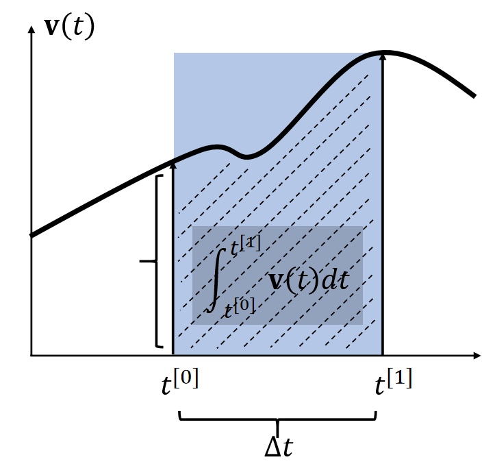 | 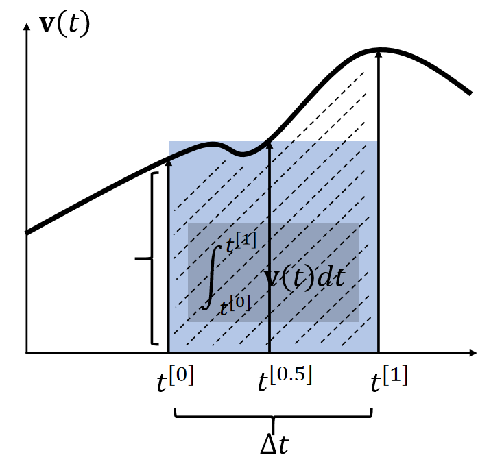 |
| 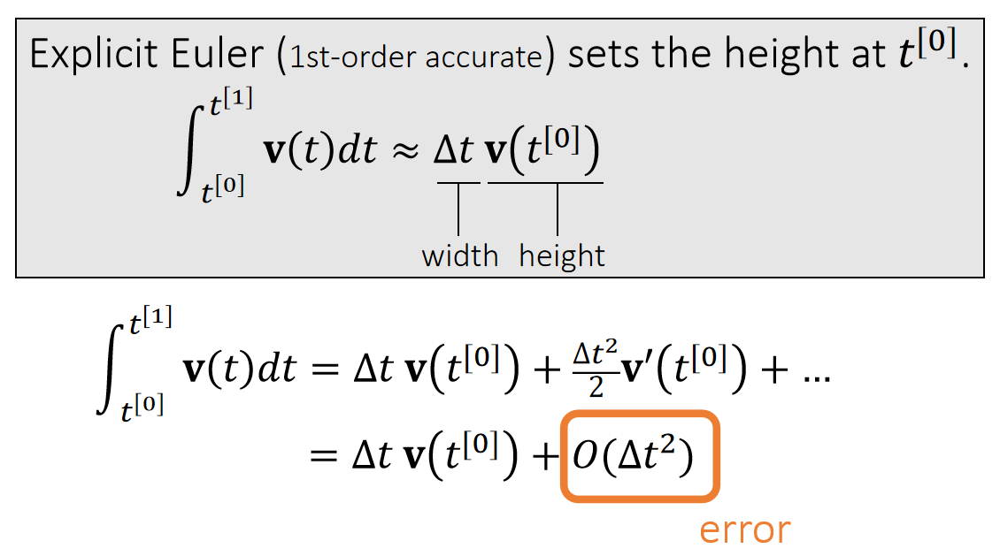 |  | 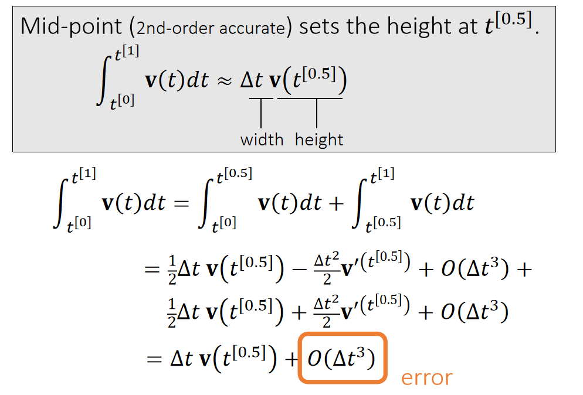 |
| 使用 \(t_0\) 时刻的速度作为box的高 | 使用 \(t_1\) 时刻的速度作为box的高 | |
| \(\int_{t^{[0]}}^{t^{[1]}} \mathbf{v} (t)dt≈∆t \mathbf{v} (t^{[0]})\) | \(\int_{t^{[0]}}^{t^{[1]}} \mathbf{v} (t)dt≈∆t \mathbf{v} (t^{[1]})\) | \(t^{[0]}\). \(\int_{t^{[0]}}^{t^{[1]}} \mathbf{v} (t)dt≈∆t \mathbf{v} (t^{[0.5]})\) |
✅ 假设\(\mathbf{x} \)和\(\mathbf{v} \)都是一维的。速度的积分就是阴影区域的面积。
✅ 近似到一阶项，因此称为一阶方法。漏掉的高阶项就是误差。
两种方法都只能一阶近似
P16
Leapfrog Integration
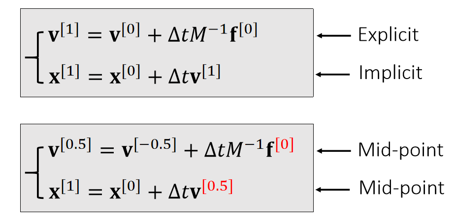
✅ 速度和位置是错开的。上下两种写法，在计算上是一样的。
In some literature, such a approach is called semi-implicit.
It has a funnier name: the leapfrog method.
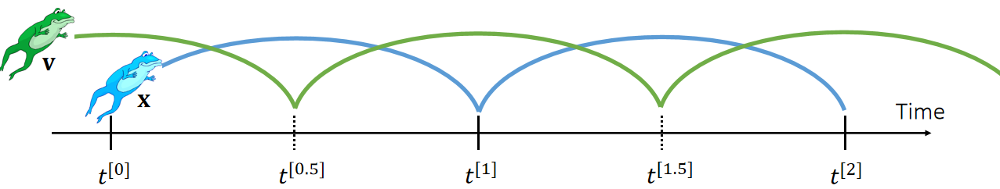
1. Fibonacci Number
0, 1, 1, 2, 3, 5, 8, 13, 21, 34, 55, 89, 144, 233,377, 610 …
Formula:
$$ \begin{aligned} F[0] = 0 \ F[1] = 1 \ F[i] = F[i-1] + F[i-2] \ F[n] = \frac{(1+\sqrt {5})^n-(1-\sqrt {5})^n}{2^n\sqrt 5} = \left[\frac{1}{\sqrt{5}}\left(\frac{1+\sqrt{5}}{2}\right)^n\right] \end{aligned} $$
2. Lucas Number
1, 3, 4, 7, 11, 18, 29, 47, 76, 123...
Formula:
$$ L[n] = \left( \frac{1+\sqrt {5}}{2}\right)^n + \left( \frac{1-\sqrt {5}}{2}\right)^n $$
3. Catalan Number
1, 2, 5, 14, 42, 132, 429, 1430, 4862, 16796, 58786,208012…
Formula:
$$ C[n] = \frac{C(2n, n)}{n+1} $$
Application:
-
将 n + 2 边形沿弦切割成 n个三角形的不同切割数
-
n + 1个数相乘, 给每两个元素加上括号的不同方法数
-
n 个节点的不同形状的二叉树数(严《数据结构》P.155)
-
从n * n 方格的左上角移动到右下角不升路径数
4. StirlingNumber(Second Kind)
S(n, m)表示含n个元素的集合划分为m个集合的情况数
或者是n个有标号的球放到m 个无标号的盒子中, 要求无一为空, 其不同的方案数
Formula:
$$ \begin{aligned} S(n, m) = \begin{cases} 0 && (m = 0 || n < m) \ S(n-1, m-1) + mS(n-1, m) && (n > m \ge 1) \end{cases} \ S(n, m) = \frac{1}{m!}\sum_{i=0}^m(-1)^iC(m,i)*(m-i)^n \end{aligned} $$
Special Cases:
$$ \begin{aligned} S(n, 0) = 0 \ S(n, 1) = 1 \ S(n, 2) = 2^{n-1} - 1 \ S(n, 3) = \frac{1}{6}(3^n - 3*2^n+3) \ S(n, n-1) = C(n, 2) \ S(n, n) = 1 \end{aligned} $$
5. BellNumber
n 个元素集合所有的划分数
Formula:
$$ B[n] = \sum_{i=0}^n S(n, i) $$
6. Stirling's Approximation
$$ n! = \sqrt{2\pi n}(\frac{n}{e})^n $$
7. Sum of Reciprocal Approximation
EulerGamma = 0.57721566490153286060651209;
$$ \sum_{i=1}^n \frac{1}{i} = \ln(n) + EulerGamma; (n \rightarrow \infty) $$
8. Young Tableau
Young Tableau(杨式图表)是一个矩阵, 它满足条件:
如果格子[i, j]没有元素, 则[i+1, j]也一定没有元素
如果格子[i, j]有元素a[i, j],则[i+1, j]要么没有元素, 要么a[i+1, j] > a[i, j]
Y[n]代表n个数所组成的杨式图表的个数
Formula:
$$ \begin{aligned} Y[1] = 1 \ Y[2] = 2 \ Y[n] = Y[n-1] + (n-1) * Y[n-2]; (n>2) \end{aligned} $$
Sample:
n = 3;

-
整数划分
将整数n分成k份, 且每份不能为空, 任意两种分法不能相同
- 不考虑顺序
for(int p=1; p<=n ;p++)
for(int i=p; i<=n ;i++)
for(int j=k; j>=1 ;j--)
dp[i][j] += dp[i-p][j-1];
cout<< dp[n][k] <<endl;
- 考虑顺序
dp[i][j] = dp[i-k][j-1]; (k=1..i)
- 若分解出来的每个数均有一个上限m
dp[i][j] = dp[i-k][ j-1];(k=1..m)
10. 错排公式
$$ \begin{aligned} d[1] = 0 \ d[2] = 1 \ d[n] = (n-1) * (d[n-1] + d[n-2]) \end{aligned} $$
几何级数
如果一列数，从第一项$a_1$ $(a_1 \neq 0)$开始，以后毎一项都是它前一项乘上一个固定数r，即
$$ a_1, a_1r, a_1r^2, \cdots, a_1r^{n-1},\cdots $$
因为该数列毎相邻两项之比r保持不变，故称之为等比数列，而为公比。 如果等比数列中各项依次相加，即 $$ S_n = a_1 + a_2 + \cdots + a_n = \sum_{k=1}^n a_1r^{k-1} $$
我们便称其为等比级数（或几何级数）。
$$ ||x||_p = (\sum_i{|x_i|^p})^{1/p},\quad p \in \Bbb R,\quad p \geq 1 $$
意义：
一个将向量映射到非负值的函数。
衡量从原点到点x 的距离。
性质：
$$ \begin{aligned} f(x) = 0 \Rightarrow x = 0 \ f(x+y) \leq f(x) + f(y) \ \forall \alpha \in \Bbb R, f(\alpha x) = \alpha f(x) \end{aligned} $$
常用范数
$L^2$范数 （欧几里得范数）
$$ ||x|| = ||x||_2 = \sqrt {\sum_i{x_i}^2} $$
意义：原点到x的欧几里得距离
平方$L^2$范数
$$ \sum_i{x_i}^2 = x^Tx $$
意义：
- 对x中每个元素求导只取决于对应的元素
- 在原点附近增长十分缓慢（缺点）
$L^1$范数
$$ ||x||_1 = \sum_i |x_i| $$
意义：
- 用于“零和非零元素之间的差异非常重要”的问题
- 作为“表示非零元素数目”的替代函数
$L^\infty$范数
$$ ||x||_\infty = max_i|x_i| $$
意义：表示向量中具有最大幅值的元素的绝对值
Frobenius范数
$$ ||A||F = \sqrt sum{i,j}A_{i,j}^2 $$
类似于向量的$L^2$范数
向量
全篇以2D为例，但对高维同样适用。
向量性质 [07：54]
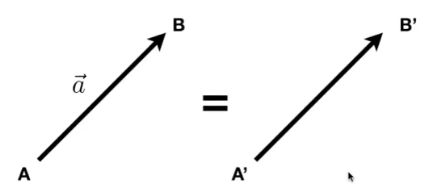
-
方向: \( B - A \) 或 \( \vec{a} \)
-
长度：\( ||B-A || \) 或 \( ||\vec{a}|| \) (与起点无关)
-
单位向量：\( \vec{a}=\frac{\vec{a}}{||\vec{a}||} \)，模长为1，通常用于表示方向
向量是一维的，分为向量和列向量。如果没有特殊说明，一般默认为列向量。 所以书写公式时，一个向量写为 \(\vec{a}=\left( x, y \right) ^T\)，其长度为\(||\vec{a}|| = \sqrt{x^2 + y^2}\)
向量加法
代数意义
$$ \vec{a}=\left( x_1, y_1 \right) ^T , \vec{b}=\left( x_2, y_2 \right) ^T $$
$$ \vec{a}+\vec{b}=\left( x_1+x_2, y_1+y_2 \right) ^T $$
几何意义

向量点乘
几何意义
$$ \vec{a}\cdot \vec{b}=||\vec{a}||\cdot ||\vec{b}||\cdot \cos <\vec{a}, \vec{b}> $$
向量点乘的结果是标量
📌补充： 由 \( \vec{a} \) 到 \( \vec{b} \) 的夹角 \( <\vec{a},\vec{b}> \) 是 \( \theta \) , 如果是由 \( \vec{b} \) 到 \( \vec{a} \) 的夹角 \( <\vec{b}, \vec{a}> \) , 则为 \( -\theta \) 。由于cos是关于x轴对称的，因此\(a \dot b = b \dot a\)
代数意义
$$ \vec{a}=\left( x_1, y_1 \right) ^T , \vec{b}=\left( x_2, y_2 \right) ^T $$
$$ \vec{a}\cdot \vec{b}=x_1x_2+y_1y_2 $$
性质
-
交换律：\( \vec{a}\cdot \vec{b}=\vec{b}\cdot \vec{a} \)
-
分配律： \( \vec{a}\cdot(\vec{b}+\vec{c})=\vec{a}\cdot \vec{b}+\vec{a}\cdot \vec{c} \)
-
结合律： \( (k\cdot \vec{a})\cdot \vec{b}=\vec{a}\cdot (k\cdot \vec{b})=k\cdot(\vec{a}\cdot \vec{b}) \)
作用
-
计算两个向量之间的夹角
\( \cos \theta =\frac{\vec{a}\cdot \vec{b}}{||\vec{a}||\cdot ||\vec{b}||} \)
当a和b都是单位向量时，可简化为：
$$ \cos \theta = \vec{a}\cdot \vec{b} $$
-
计算一个向量投影在另一个向量上的投影
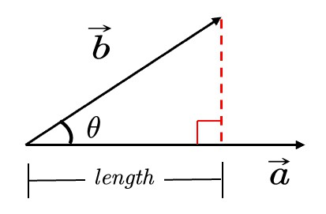
b在a的投影为\(\vec{b}_{\bot}\)，其长度为：
$$ length=||\vec{b}||\cos \theta =||\vec{b}||\frac{\vec{a}\cdot \vec{b}}{||\vec{b}||\cdot ||\vec{a}||}=\frac{\vec{a}}{||\vec{a}||}\vec{b}=\hat{a}\cdot \vec{b} $$
其方向同a。
因此：
$$ \vec{b}_{\bot} = (\hat{a}\cdot \vec{b}) \hat a $$
-
把向量分解成垂直和平行的两个向量
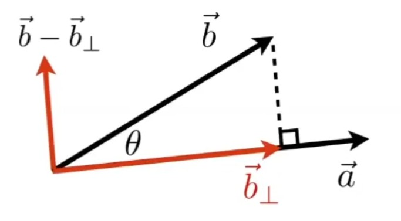 -
计算两个向量有多接近
两个向量做点乘，可以反映二者方向的“接近”程度
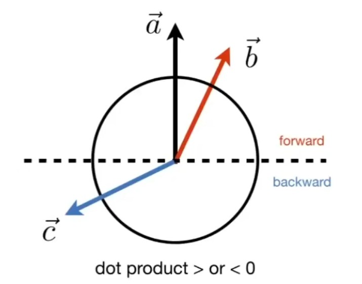表示方向是否相同 ： 我们假设 \( \vec{a} \) 已给定，如果一个向量的终点落在虚线上半部分，例如 \( \vec{b} \) ，则可以认为该向量在方向上与 \( \vec{a} \) 是相同的或是说都是向前的，此时\(\hat a \cdot \hat b > 0\)；如果一个向量，例如 \( \vec{c}\)，终点落在虚线下半部分，则可以认为 \( \vec{a} \) 和 \( \vec{c}\) 两个向量的方向基本是相反的，此时\(\hat a \cdot \hat b < 0\)
表示接近程度 ：点乘结果落在 \([-1, 1]\) 上，数值越大越接近，结果为1时方向相同。数值越小方向越远，为-1时方向正好相反。
📌补充：（点乘： \( \vec{a}\cdot \vec{b} > 0 \) ，方向相同； \( \vec{a}\cdot \vec{c} < 0 \) ，方向相反）
向量叉乘
几何意义
\( \vec{c}=\vec{a}\times \vec{b} \)
\(\vec{c}\) 是一个向量，方向同时与 \(\vec{a}\) 和 \(\vec{b}\) 垂直（右手法则），大小为 \(||\vec{a}||\cdot ||\vec{b}||\cdot \sin \theta \) (\(\theta\) 是a到b的夹角)
✅右手螺旋法则：
\(\vec{c}=\vec{a}\times \vec{b}\)
右手手指指向 \(\vec{a}\) 方向，然后沿着去往 \(\vec{b}\) 的方向握紧四指，此时大拇指指向的方向，就是 \(\vec{c}\) 的方向。
\(\sin \theta = -\sin(-\theta)\)，因此\(a\times b = b\times a\)
性质
[34：15]
- \( \vec{x}\times \vec{y}=+\vec{z} \)
- \( \vec{y}\times \vec{x}=-\vec{z} \)
- \( \vec{y}\times \vec{z}=+\vec{x} \)
- \( \vec{z}\times \vec{y}=-\vec{x} \)
- \( \vec{z}\times \vec{x}=+\vec{y} \)
- \( \vec{x}\times \vec{z}=-\vec{y} \)
- \( \vec{a}\times \vec{b}=-\vec{b}\times \vec{a} \) (不满足交换律)
- \( \vec{a}\times \vec{a}=\vec{0} \) （不是0，而是长度为0的向量）
- \( \vec{a}\times \left( \vec{b}+\vec{c} \right) =\vec{a}\times \vec{b}+\vec{a}\times \vec{c} \) （分配律）
- \( \vec{a}\times \left( k\vec{b} \right) =k\left( \vec{a}\times \vec{b} \right) \) （结合律）
左手则符号相反
📌 在一个三维坐标系中，如果\( \vec{x}\times \vec{y}=\vec{z}\)，那么这个坐标系称为右手坐标系。
代数意义
[36:11]
\[ \vec{a}\times \vec{b}=\left( \begin{array}{c} y_az_b-y_bz_a\\ z_ax_b-x_az_b\\ x_ay_b-y_ax_b \end{array} \right) = \left[ \begin{matrix} 0& -z_a& y_a\\ z_a& 0& -x_a\\ -y_a& x_a& 0\\ \end{matrix} \right] \left[ \begin{matrix} x_b\\ y_b\\ z_b\\ \end{matrix} \right] \]
💡思考： 这个式子中，\( x_a,y_a,z_a \) 是\( \vec{a}\) 在三维坐标系中的三个坐标分量的代数表示。 叉乘只用于3D中，在2D中没有定义。
式子中的矩阵称为dual matrix of a，常写作\(A^*\)
❗ 在本课程中默认使用右手坐标系，OPENGL, UE, unity等api默认使用左手坐标系。
向量叉乘在图形学中的作用
-
判定左和右
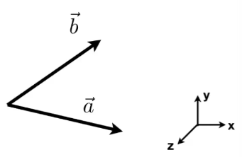📌左右： 目标向量逆时针旋转指向的区域，是目标向量的左侧，反之是右侧。
如果\( \vec{a}\times \vec{b} \) 的结果是正值，即与 \(Z\) 轴方向相同，就表示 \(\vec{b}\) 在 \(\vec{a}\) 的左侧。
❓ 叉乘的结果是一个向量，向量没有正负属性，什么叫结果是正的？
答：这里假设a和b都是xy平面上的向量，即
$$ a^\top = (x_a, y_a, 0) \\ b^\top = (x_b, y_b, 0) $$ \(c = a \times b\)，那么
$$ c^\top = (0, 0, z_c) $$ 在这种情况下，\(z_c > 0\)认为结果是正的，b在a的左侧。
离开了前面的假设，就不能用这种方法简单的判断了。
-
判断内和外
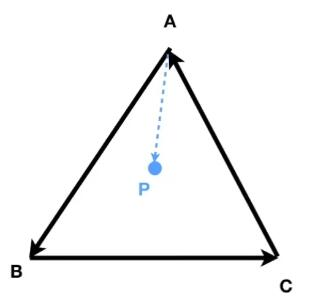✅如何判断P点在A、B、C的内部？
\( AB\times AP \)，可以得到 \(AP\) 在 \(AB\) 的左侧。\( BC\times BP \)，可以得到 \(BP\) 在 \(BC\) 的左侧。\( CA\times CP \)，可以得到 \(CP\) 在 \(CA\) 的左侧。这样，就可以判断出P点在A、B、C的内部（P点在这三条边的同一侧）。
-
构建右手坐标系
有三个单位向量，两两垂直：
\(||\vec{u}||=||\vec{v}||=||\vec{w}||=1\)
\(\vec{u}\cdot \vec{v}=\vec{v}\cdot \vec{w}=\vec{u}\cdot \vec{w}=0\)
且 \(\vec{w}=\vec{u}\times \vec{v}\)
则这三个向量构成一个右手坐标系。
可以把任意一个向量分解到轴上去：
\(\vec{p}=\left( \vec{p}\cdot \vec{u} \right) \vec{u}+\left( \vec{p}\cdot \vec{v} \right) \vec{v}+\left( \vec{p}\cdot \vec{w} \right) \vec{w}\)
- \(\left( \vec{p}\cdot \vec{u} \right)\) 是投影长度
- \(\vec{u}\) 是方向
其它术语
线性组合：设α₁,α₂,…,αₑ(e≥1)是域P上线性空间V中的有限个向量.若V中向量α可以表示为：α=k₁α₁+k₂α₂+…+kₑαₑ(kₑ∈P,e=1,2,…,s),则称α是向量组α₁,α₂,…,αₑ的一个线性组合。
向量空间：由向量组成的集合，满足加法封闭性、乘法封闭性。
内积：指接受在实数R上的两个向量并返回一个实数值标量的二元运算。
内积空间：增添了一个额外的结构的向量空间。这个额外的结构叫做内积，或标量积，或点积。这个增添的结构允许我们谈论向量的角度和长度。
赋范向量空间：拥有一个范数的向量空间叫做赋范向量空间。
半赋范向量空间：拥有半范数的叫做半赋范向量空间。
哈达玛积：Hadamard product，又叫Schur积。定义为$$(s \odot t)_j = s_j t_j$$，例如：
$$
\begin{aligned}
\left[\begin{array}{c} 1 \ 2 \end{array}\right]
\odot \left[\begin{array}{c} 3 \ 4\end{array} \right]
= \left[ \begin{array}{c} 1 * 3 \ 2 * 4 \end{array} \right]
= \left[ \begin{array}{c} 3 \ 8 \end{array} \right] && (28)
\end{aligned}
$$
本文出自CaterpillarStudyGroup，转载请注明出处。
https://caterpillarstudygroup.github.io/GAMES101_mdbook/
矩阵
矩阵乘法
$$ A_{M\times N}B_{N\times P} = C_{M\times P} $$
- \(AB\ne BA\) （不满足交换律）
- \(\left( AB \right) C=A\left( BC \right) \) （结合律）
- \(\left( A+B \right) C=AC+BC\) （分配律）
矩阵与向量相乘时，可以把向量看作是\(M \times 1\)的矩阵
$$ a \cdot b = a^\top b \\ a \times b = A^* b $$
矩阵转置
转置：行列互换，用\(A^\top\)表示
- \(\left( AB \right) ^T=B^TA^T\)
矩阵的逆
逆矩阵：用\(A^{-1}\)表示，方阵才有逆矩阵
I：单位矩阵，对角线上全1、其余元素全0的矩阵
- \(AA^{-1}=A^{-1}A=I\)
- \(\left( AB \right) ^{-1}=B^{-1}A^{-1}\)
本文出自CaterpillarStudyGroup，转载请注明出处。
https://caterpillarstudygroup.github.io/GAMES101_mdbook/
2D变换(2D Transformation)
[06：52]
缩放(Scale)
图中，横轴和纵轴都缩小了\(\frac{1}{2}\)，用数学形式表达：
\[ x'=sx \\ y'=sy \] 其中，\((x',y')\) 是缩放后的坐标，\(s\) 是缩放尺度，\((x,y)\) 是原坐标。
将该式子写成矩阵的形式为：
\[ \left[ \begin{array}{c} x'\\ y'\\ \end{array} \right] =\left[ \begin{matrix} s& 0\\ 0& s\\ \end{matrix} \right] \left[ \begin{array}{c} x\\ y\\ \end{array} \right] \]
即，得到缩放矩阵为：
\[ S_{0.5}=\left[ \begin{matrix} s& 0\\ 0& s\\ \end{matrix} \right] =\left[ \begin{matrix} 0.5& 0\\ 0& 0.5\\ \end{matrix} \right] \]
如果缩放不是均匀的，例如 \(x\) 轴缩小0.5，\(y\) 不变，则用矩阵表示为：

\[ \left[ \begin{array}{c} x'\\ y'\\ \end{array} \right] =\left[ \begin{matrix} s_x& 0\\ 0& s_y\\ \end{matrix} \right] \left[ \begin{array}{c} x\\ y\\ \end{array} \right] \]
即，得到缩放矩阵为：
\[ S_{0.5,1.0}=\left[ \begin{matrix} s_x& 0\\ 0& s_y\\ \end{matrix} \right] =\left[ \begin{matrix} 0.5& 0\\ 0& 1.0\\ \end{matrix} \right] \]
反射(Reflection)
反射也称对称。
上图中，原图相对于 \(y\) 轴做了反转，用等式表示为：
\[ x'=-x\\ y'=y \]
该等式可以用矩阵表示为：
\[ \left[ \begin{array}{c} x'\\ y'\\ \end{array} \right] =\left[ \begin{matrix} -1& 0\\ 0& 1\\ \end{matrix} \right] \left[ \begin{array}{c} x\\ y\\ \end{array} \right] \]
切变(Shear)
上图是切变的例子。可以看到，图像上任意一点的 \(y\) 轴坐标值并未改变，仅 \(x\) 轴坐标改变了。则可以确定的是 \(y'=y\)，继续观察，当 \(y\) 为0时， \(x\) 没有变化，当 \(y\) 为1时， \(x\) 都水平右移了 \(a\) 长度，当 \(y\) 为1/2时， \(x\) 移动了 \(\frac{a}{2}\)，所以，找到了规律， \(x\) 移动距离为 \(ay\)。用矩阵表示为：
\[ \left[ \begin{array}{c} x'\\ y'\\ \end{array} \right] =\left[ \begin{matrix} 1& a\\ 0& 1\\ \end{matrix} \right] \left[ \begin{array}{c} x\\ y\\ \end{array} \right] \]
📌补充： 找到变化规律，就能写出变换的表达式
旋转(Rotate)
✅旋转默认是绕原点(0,0)旋转；默认旋转方向是逆时针旋转。

旋转的矩阵表达式推导：
💡思路： 旋转的图像每一点都需要符合表达式，那么，特殊的点也必须符合，所以从特殊点入手，找出旋转的规律，从而推导出旋转的矩阵形式表达。
假设有一个正方形，如图所示。
将其旋转 \(\theta\) 角度。
我们的目的是得到 \(\left( x,y \right) ->\left( x',y' \right) \)
矩阵的形式为： \(\left[ \begin{array}{c} x'\\ y'\\ \end{array} \right] =\left( \begin{matrix} A& B\\ C& D\\ \end{matrix} \right) \left( \begin{array}{c} x\\ y\\ \end{array} \right) \)
只要找出规律，求出ABCD即可。
我们将目光先聚集在下图中的红点。
最基本的，我们可以知道一些信息，例如，原本的(1,0)点被旋转成为(\(cos\theta，sin\theta\))，
于是，我们就可以初步得到：
\( \left( \begin{array}{c} \cos \theta\\ \sin \theta\\ \end{array} \right) =\left( \begin{matrix} A& B\\ C& D\\ \end{matrix} \right) \left( \begin{array}{c} 1\\ 0\\ \end{array} \right) \)
也就是：
\(\cos \theta =A\cdot 1+B\cdot 0 = A\)
\(\sin \theta =C\cdot 1+D\cdot 0 =C\)
现在，已经得到了A和C。接着，我们选择另一个点。
不难得到，\( B=-sin\theta, D=cos\theta \)
所以有
\( \left( \begin{array}{c} \cos \theta\\ \sin \theta\\ \end{array} \right) =\left( \begin{matrix} cos\theta& -sin\theta\\ sin\theta& cos\theta\\ \end{matrix} \right) \left( \begin{array}{c} 1\\ 0\\ \end{array} \right) \)
因此
$$ \left[ \begin{array}{c} x'\\ y'\\ \end{array} \right] =\left[ \begin{matrix} \cos\theta& -\sin\theta\\ \sin\theta& \cos\theta\\ \end{matrix} \right] \left[ \begin{array}{c} x\\ y\\ \end{array} \right] $$
线性变换
上述缩放、反射、切变和旋转，都称为线性变换，可以统一由下面的表达式来表达：
\[ x'=ax+by\\ y'=cx+dy \]
\[ \left[ \begin{array}{c} x'\\ y'\\ \end{array} \right] =\left[ \begin{matrix} a& b\\ c& d\\ \end{matrix} \right] \left[ \begin{array}{c} x\\ y\\ \end{array} \right] \]
\[ X'=MX \]
❗注意： 要用相同维度的向量，去和X相乘。旋转矩阵必须满足\(R^{-1}=R^T\)
本文出自CaterpillarStudyGroup，转载请注明出处。
https://caterpillarstudygroup.github.io/GAMES101_mdbook/
2D仿射变换(2D Affine Transformation)
平移
我们先看平移变换：
平移变换非常简单，可以由下面的式子表示：
\[ x'=x+t_x\\ y'=y+t_y \]
但是有一个问题，我们不能把上述式子直接用矩阵的形式表达，需要在矩阵运算后再加一个偏移量：
\[ \left[ \begin{array}{c} x'\\ y'\\ \end{array} \right] =\left[ \begin{matrix} a& b\\ c& d\\ \end{matrix} \right] \left[ \begin{array}{c} x\\ y\\ \end{array} \right] +\left[ \begin{array}{c} t_x\\ t_y\\ \end{array} \right] \]
📌如果只有平移，则 \(a,b,c,d\) 构成一个单位矩阵
💡思考： 平移不是线性变换，不满足\(X'=MX\)
齐次坐标
为了解决“平移变换不能够线性变换表示”的问题，将坐标或向量添加一项(以2D为例)：
- 2D point = \((x, y, 1)^T\)
- 2D vector = \((x, y, 0)^T\)
这样，就可以用统一的X'=MX形式兼容线性变换和平移变换了：
\[ \left( \begin{array}{c} x'\\ y'\\ w'\\ \end{array} \right) =\left( \begin{matrix} 1& 0& t_x\\ 0& 1& t_y\\ 0& 0& 1\\ \end{matrix} \right) \cdot \left( \begin{array}{c} x\\ y\\ 1\\ \end{array} \right) =\left( \begin{array}{c} x+t_x\\ y+t_y\\ 1\\ \end{array} \right) \]
💡 当前维度解决不了的问题，可以考虑升维解决。
📌 为point增加一项1，因为point移动后不再是原来的point。为vector添加一项0，是因为向量具有平移不变性，向量平移后仍然是原向量。
📌 \((x, y, w)^T\) 如果用于表达2D点，等同于\((\frac{x}{w}, \frac{y}{w}, 1)\)
添加项是否存在，不影响point与vector之间运算的意义：
\[ vector + vector = vector\\ point + vector = point\\ point - point = vector\\ point + point = 两点的中点（齐次坐标下） \]
齐次坐标的性质：
- 有 \((x, y, z, 1)\) 这样一个坐标，那么为该坐标乘以一个不为0的数 \(k\)，即 \((kx, ky, kz, k)\)，结果不变。
- 同理，给该坐标乘以坐标本身的 \(z\) 值，它仍然表示着3D中的相同点。即 \((xz, yz, z^2, z)\)，结果不变。
- 例如： \((1, 0, 0, 1)\) 和 \((2, 0, 0, 2)\) 都表示 \((1, 0, 0)\)
仿射变换(Affine transformation)
线性变换 + 平移 = 仿射变换
所有的仿射变换，可以以齐次坐标的形式表达：
\[ \left[ \begin{array}{c} X'\\ 1\\ \end{array} \right] =\left[ \begin{matrix} SR& T\\ 0& 1\\ \end{matrix} \right] \left[ \begin{array}{c} X\\ 1\\ \end{array} \right] \]
本文出自CaterpillarStudyGroup，转载请注明出处。
https://caterpillarstudygroup.github.io/GAMES101_mdbook/
逆变换(Inverse transform)

💡 当一个变换是通过\(M\)得到的，那么可以通过\(M\)的逆\(M^{-1}\)来恢复变换。
旋转的逆变换
再次来看矩阵旋转 \(X'=R_{\theta}X\) :
我们将 \(X\) 旋转 \(\theta\) 度， \(R_{\theta}\) 为：
\[ R_{\theta}=\left( \begin{matrix} \cos \theta& -\sin \theta\\ \sin \theta& \cos \theta\\ \end{matrix} \right) \]
如果要逆转回来，恢复原来的矩阵，需要旋转 \(-\theta\) 度，根据上述旋转的推导，可以得到：
\[ R_{-\theta}=\left( \begin{matrix} \cos \theta& \sin \theta\\ -\sin \theta& \cos \theta\\ \end{matrix} \right) \]
而 \(R_{-\theta}\) 恰好是 \(R_{\theta}\) 的转置矩阵 \(R_{\theta}^{T}\)， 即：
\[ R_{-\theta}=R_{\theta}^{T} \]
由 “当一个变换是通过\(M\)得到的，那么可以通过\(M\)的逆\(M^{-1}\)来恢复变换” 可知，\(R_{\theta}^{-1}\) 与刚刚旋转 \(-\theta\) 推导得到的 \(R_{\theta}\) 相等，即：
\[ R_{\theta}^{-1}=R_{-\theta} \]
于是有：
\[ R_{-\theta}=R_{\theta}^{-1}=R_{\theta}^{T} \]
本文出自CaterpillarStudyGroup，转载请注明出处。
https://caterpillarstudygroup.github.io/GAMES101_mdbook/
变换合成与分解
变换合成
- 复杂变换可以通过简单变换一步一步达到，合成之后的变换矩阵维度不变
- 变换顺序非常重要，ABC不等于ACB（矩阵乘法性质）

变换分解
以C点为中心的旋转，可以分解为：
- 从C点平移到原点
- 旋转
- 再从原点平移到C点
即：\(X'=MX=T\left( c \right) \cdot R\left( \alpha \right) \cdot T\left( -c \right) \cdot X\)
💡我的思考：
1.复杂问题都可以分解为互相独立的简单问题，但需要保证分解出的子问题是独立的。简单操作也可以组合成复杂操作，但需要保证组合的效果是预期的，而不会引入奇怪的问题。
前面两处使用了这种思路
（1）简单线性变换 VS 复杂仿射变换
（2）基于不同轴的简单旋转 VS 基于特定方向的旋转（3D旋转见下一节）
但这两个问题的子问题都没有完全独立，因此都存在子问题的顺序要求。
2.当学到一个新的概念/方法时，可以想一想，为什么要引入这个概念/方法？
是为了解决什么问题？
以前是用什么方法来解决的？它有什么问题？
这个方法是否解决了以前方法的问题？这个方法有什么局限性？
两者能否结合？
两者如何取舍？
本文出自CaterpillarStudyGroup，转载请注明出处。
https://caterpillarstudygroup.github.io/GAMES101_mdbook/
3D变换(3D Transformation)
如果用齐次坐标来表示三维的点或向量，和二维的情况相似：
- 3D point = \((x, y, z, 1)^{T}\)
- 3D vector = \((x, y, z, 0)^{T}\)
则一个齐次坐标 \((x, y, z, w)^{T}\) \((w\ne 0)\) 表示的点为 \(\left( \frac{x}{w}, \frac{y}{w}, \frac{z}{w} \right)\)
缩放(Scale)
\[ S\left( s_x, s_y, s_z \right) =\left( \begin{matrix} s_x& 0& 0& 0\\ 0& s_y& 0& 0\\ 0& 0& s_z& 0\\ 0& 0& 0& 1\\ \end{matrix} \right) \]
平移(Translation)
\[ T\left( t_x, t_y, t_z \right) =\left( \begin{matrix} 1& 0& 0& t_x\\ 0& 1& 0& t_y\\ 0& 0& 1& t_z\\ 0& 0& 0& 1\\ \end{matrix} \right) \]
旋转(Rotation)
自然旋转
📌自然旋转： 绕着某一个坐标轴旋转。
💡思考： 当绕着x轴旋转时，矩阵在x轴上的坐标值是不变的，因此在变换矩阵中，与X相乘的部分，是 \((1 ,0 , 0)\)，绕y、z轴同理。
绕x轴旋转：
\[ R_x\left( \alpha \right) =\left( \begin{matrix} 1& 0& 0& 0\\ 0& \cos \alpha& -\sin \alpha& 0\\ 0& \sin \alpha& \cos \alpha& 0\\ 0& 0& 0& 1\\ \end{matrix} \right) \]
绕y轴旋转：
\[ R_y\left( \alpha \right) =\left( \begin{matrix} \cos \alpha& 0& \sin \alpha& 0\\ 0& 1& 0& 0\\ -\sin \alpha& 0& \cos \alpha& 0\\ 0& 0& 0& 1\\ \end{matrix} \right) \]
💡思考： 上式的变换矩阵，与x、z不同，是 \(R_{-\theta}\) 而不是 \(R_{\theta}\)，这是为什么呢？
因为绕y旋转，如果使用 \(R_\theta\)，那么可以认为在计算过程中x和z坐标在变化，有 \(\left( \begin{array}{c} X'\\ Z'\\ \end{array} \right) =R_{\theta}\cdot \left( \begin{array}{c} X\\ Z\\ \end{array} \right) =\left( \begin{matrix} \cos \theta& -\sin \theta\\ \sin \theta& \cos \theta\\ \end{matrix} \right) \left( \begin{array}{c} X\\ Z\\ \end{array} \right) \) , 但是， \(\vec{x}\times \vec{z}=-\vec{y}\)，也就是说，使用 \(R_\theta\) 会导致绕y旋转是顺时针旋转，而我们约定了，旋转默认是逆时针旋转，所以需要用 \(R_{-\theta}=\left( \begin{matrix} \cos \theta& \sin \theta\\ -\sin \theta& \cos \theta\\ \end{matrix} \right) \)
绕z轴旋转：
\[ R_z\left( \alpha \right) =\left( \begin{matrix} \cos \alpha& -\sin \alpha& 0& 0\\ \sin \alpha& \cos \alpha& 0& 0\\ 0& 0& 1& 0\\ 0& 0& 0& 1\\ \end{matrix} \right) \]
一般旋转
任意一个3D旋转，可以写成：
\[ R_{xyz}\left( \alpha , \beta , \gamma \right) =R_x\left( \alpha \right) R_y\left( \beta \right) R_z\left( \gamma \right) \]
也就是说，一般旋转可以由绕x、y、z轴的自然旋转组合而成。
在图形学中，任意旋转用矩阵表达为（Rodrigues' Rotation Formula）：
\[ R\left( \mathbf{n},\alpha \right) =\cos \left( \alpha \right) \mathbf{I}+\left( 1-\cos \left( \alpha \right) \right) \mathbf{nn}^{\mathrm{T}}+\sin \left( \mathrm{\alpha} \right) \underset{\mathrm{N}}{\underbrace{\left( \begin{matrix} 0& -n_z& n_y\\ n_z& 0& -n_x\\ -n_y& n_x& 0\\ \end{matrix} \right) }} \]
公式推导：(暂无)
为解决旋转插值问题，参考四元数link。
本文出自CaterpillarStudyGroup，转载请注明出处。
https://caterpillarstudygroup.github.io/GAMES101_mdbook/
奇异矩阵：有0特征值的矩阵。
（半）正定/负定矩阵：是用来描述对称矩阵的。
||正定矩阵|半正定矩阵|负定矩阵|半负定矩阵|
|---|---|---|---|---|
|对于任意非零向量x|$x\top Hx > 0$|$x\top Hx \ge 0$|$x\top Hx < 0$|$x\top Hx \le 0$|
|所有特征值|正|非负|负|非正|
问：为什么所有特征值为正的对称矩阵一定是正定的？
答：令v是H的一个特征向量且v是单位向量，$\lambda$是v对应的特征值，可以算出：$v^\top H v = \lambda$
令v1、v2是H的两个特征向量且v1、v2都是单位向量且v1、v2相互正交，并令x=a1v1+a2v2，可以算出$x^\top Hx = a_1^2\lambda_1 + a_2^2\lambda_2$
继续拓展，任意向量x可以用H的所有特征向量的某种线性组合。
假设$x=a_1v_1 + a_2v_2 + ... + a_n v_n$，则$x\top Hx = a_1^2\lambda_1 + a_2^2\lambda_2 + ... + a_n^2\lambda_n$
Jacobian矩阵：在向量分析中，雅可比矩阵是函数的一阶偏导数以一定方式排列成的矩阵。
假设$$F:R_m\rightarrow R_n$$是一个从n维欧氏空间映射到到m维欧氏空间的函数。这个函数由m个实函数组成：$$y_1(x_1,x_2,\cdots,x_m),y_2(x_1,x_2,\cdots,x_m),\cdots,y_n(x_1,x_2,\cdots,x_m)$$。这些函数的偏导数(如果存在)可以组成一个m行n列的矩阵，这个矩阵就是所谓的雅可比矩阵：
$$
\begin{bmatrix}
\frac{\partial y_1}{\partial x_1} & \cdots & \frac{\partial y_1}{\partial x_n} \
\vdots & \ddots & \vdots \
\frac{\partial y_m}{\partial x_1} & \cdots & \frac{\partial y_m}{\partial x_n} \
\end{bmatrix}
$$
另一种解释为：n维的向量x对m维的向量y的偏导为m*n的Jacobian矩阵。
Hessian Matrix：是一个多元函数的二阶偏导数构成的方阵，描述了函数的局部曲率。

性质一：H矩阵是对称矩阵。
性质二：
当H是正定时，f在x处是极小值点。
当H是负定时，f在x处是极大值点。
当H是不定时，f在x处不是极值点。
当H是半正定或半负定时，f在x处是可疑极值点。
H矩阵的病态
病态矩阵
以2*2的H矩阵为例，
如果条件数小，相当于f的等高线是一组同心圆。
如果条件数大，相当于f的等高线是一组同心椭圆。条件数越大，椭圆越扁。
正交
向量x与向量y正交：$x^Ty=0$
向量x与向量y标准正交：$x^Ty=0$ 且$||x||_2=1$且$||y||_2=1$
正交矩阵:行向量和列向量分别标准正交的方阵，有以下性质：
$$ \begin{aligned} A^TA = AA^T = I \ A^{-1} = A^T \text {求逆计算代价小} \end{aligned} $$
Gram-Schmidt正交化
线性无关向量组未必是正交向量组，但正交向量组又是重要的，因此现在就有一个问题：能否
- 从一个线性无关向量组$a_1, a_2, \cdots, a_m$出发，
- 构造出一个标准正交向量组$e_1, e_2, \cdots, e_m$，
- 并且使向量组$a_1, a_2, \cdots, a_r$与向量组$e_1, e_2, \cdots, e_r$等价r=(1,2,...,m)呢?
答：施密特正交化方法。
以3个向量组成的线性无关组为例
第一步：线性无关向量组（a1,a2,a3） ---> 正交向量组(b1,b2,b3)
令:
b1 = a1
b2 = a2 - k * b1
b3 = a3 - k1 * b1 - k2 * b2
由于b1、b2、b3互相正交，
b1 * b2 = 0 ==> k = $\frac{<a2, b1>}{<b1, b1>}$
b1 * b3 = 0 && b2 * b3 = 0 ==> $k1 = \frac{<a3, b1>}{b1, b2}$， $k2 = \frac{<a3, b2>}{b2, b2}$
第二步：正交向量组（b1,b2,b3） ---> 标准正交向量组（e1,e2,e3）
$$ e_i = \frac{b_i}{||b_i||} $$
$$ Av=\lambda v $$
$$A$$是任意方阵。
$$v$$是非零向量，是$$A$$的特征向量，通常只考虑单位特征向量
$$\lambda$$是$$A$$$的特征值
特征分解
$$ A = Vdiag(\lambda)V^-1 $$
所设A是一个n*n的方阵，则： $$V$$是$$A$$的n个相互正交的特征向量连成的矩阵，即$$[v_1,v_2,...,v_n]$$ $$diag(\lambda)$$是特征向量对应的特征值形成的对角矩阵，即$$ \begin{bmatrix} \lambda_1 & \ & \lambda_2 \ & & \ddots \ & & & \lambda_n\ \end{bmatrix} $$
对于任意的实对称矩阵A，有
$$
A = Q\Lambda Q^T
$$
$$A$$是实对称矩阵。
$$\Lambda$$是A的特征值降序排列形成的对角矩阵。
$$Q$$是特征值对应的特征向量组成的正交矩阵。
意义：将A看作是沿方向$$v^{(i)}$$延展i倍的空间（没看懂）
实对称矩阵特征分解的应用
优化二次方程：$$f(x)=x^TAx, \quad ||x||_2=1$$
当x为A的某个特征向量时，f(x)为对应的特征值。
$$f(x)_max$$为最大特征值。$$f(x)_min$$为最小特征值。
奇异值分解
奇异值分解，（singular value decomposition, SVD），将矩阵分解为奇异向量和奇异值。
$$
A = UDV^T
$$
$$A$$：$$m \times n$$，是任意矩阵，可以不是方阵
$$U$$：$$m \times m$$，矩阵中的列向量称为左奇异向量，也是$$AA^T$$的特征向量
$$V$$：$$n \times n$$，矩阵中的列向量称为右奇异向量，也是$$A^TA$$的特征向量
$$D$$：$$m \times n$$，由$$\lambda$$组成的对角矩阵，$$\lambda$$是A的奇异值，是$$\sqrt {AA^T\text{的特征值}}$$，是$$\sqrt {A^TA\text{的特征值}}$$
奇异值分解的应用 ： 非方阵求逆
Moore-Penrose伪逆
矩阵A的逆：
$$
A^+ = VD^+U^T
$$
V、D、U是A奇异分解后得到的矩阵。
$$D^+$$是D中的非零元素取倒数后再转置得到。
非方阵求逆的应用
求解Ax=y，
解得$$x = A^Ty$$
如果方程有多个解，x是多个解中$$||x||_2$$最小的
如果方程没有解，x使得$$||Ax-y||_2$$最小
$$ Tr(A) = \sum_iA_{i,i} $$
Frobenious范数：
$$
||A||_F = \sum {Tr(AA^T)}
$$
$$ \begin{aligned} Tr(A) = Tr(A^T) \ Tr(ABC) = Tr(CBA) = Tr(BCA) \ a = Tr(a) \end{aligned} $$
$det(A) = |A| = A$的特征向量的乘积
意义：
- 将方阵映射到实数
- 用来衡量矩阵参与乘法后空间扩大或缩小了多少倍（没看懂）
病态矩阵
求解方程组时如果对数据进行较小的扰动，则得出的结果具有很大波动，这样的矩阵称为病态矩阵。
例如：

解为：x1=-100， x2=-200
而其中加入一点点的误差

则解变为：x1=40000, x2=79800
当解集 x 对 A 和 b 的系数高度敏感，那么这样的方程组就是病态的 (ill-conditioned).矩阵A为病态矩阵。
条件数
由于“ill condition”中的condition译为状态而不是条件，所以“condition number”应该译为“状态表征值”而不是“条件数”。
条件数容易让人误解为“条件的个数”。实际上它与个数没有状态，它是用来衡量这个矩阵有没有处于“病态”这个状态的一种指标。因此理解为“状态表征值”更合适。
既然所有的材料都把它称为条件数，我这里也就这么用了。但是一定不要被这个名字给误导了。它与“条件”和“个数”没有半毛钱关系。
条件数K(A)：判定矩阵是否病态以及衡量矩阵的病态程度，计算公式为：
- 常用的公式：
$$ K(A)=||A^{-1}||*||A|| $$
其中||||表示对矩阵取某一种范数
- deep learning book中定义的公式：
$$ K(A) = \max_{i,j} \frac{|\lambda_i|}{|\lambda_j|} $$
其中$\lambda$是A的特征值。
当K(A)很大时，称 A 为病态，否则称良态。K(A)越大，A的病态程度就越严重。
这两个计算公式表达的是一个意思，[?]但我不知道怎么把它们联系到一起。
参考文献
共轭：设A是实对称的正定矩阵，若向量p,q满足pAq=0，则p,q关于A共轭
共轭方向：共轭向量的方向称为共轭方向。
距离
两点之间的距离
$$ L_p(x_i, x_j) = (\sum_{l=1}^{n}|x_i^{(l)}-y_i^{(l)}|^p)^{\frac{1}{p}} $$
p=1时，曼哈顿距离
p=2时，欧氏距离
p=3时，各个坐标距离的最大值
点到平面之间的距离
点$$x_0$$到超平面$$y = w \cdot x + b$$的距离为：
$$
dis = \frac {|w \cdot x_0 + b|}{||w||}
$$
其中$$||w||$$是$$w$$的$$L_2$$范数
符号距离
符号距离函数（sign distance function），简称SDF，又可以称为定向距离函数（oriented distance function），在空间中的一个有限区域上确定一个点到区域边界的距离并同时对距离的符号进行定义：点在区域边界内部为正，外部为负，位于边界上时为0。
算术平均：
$$
average = \frac{1}{4}(a+b+c+d)
$$
调和平均：更重视较小值
$$
\begin{aligned}
average = \frac{2ab}{a+b} \
\frac{1}{average} = \frac{1}{2}(\frac{1}{a} + \frac{1}{b})
\end{aligned}
$$
加权调和平均：
$$
\begin{aligned}
average_\beta = \frac{(1+\beta^2)\times a \times b}{(\beta^2 \times a) + b} \
\frac{1}{average_\beta} = \frac{1}{1+\beta^2}(\frac{1}{a} + \frac{\beta^2}{b})
\end{aligned}
$$
$\beta < 1$：更注重a
$\beta = 1$：相当于调和平均
$\beta > 1$：更注重b
欧氏空间：设A是一个实数域上的线性空间，定义一个A到实数域R的二元映射f，使得A中任意两个向量在R中都有唯一确定的数与之对应，若f满足以下三点：
任意α、β、γ∈A，任意k、l∈R
（1）f(α, β) = f(β, α) ；（对称性）
（2）f(kα + lβ, γ) = kf(α, γ) + lf(β, γ) ；（左线性）
（3）当α ≠ 0时，f(α, α) ＞0；（正定性）
则称f为A的内积，A就称为欧氏空间。简而言之，欧氏空间就是具有了内积的线性空间。
内积空间：即欧氏空间
离散集合：就是对集合中的每个点，都可以画个圈圈把它和其他点分开来。
希尔伯特空间：就是完备的内积空间。
完备空间：空间中的任何柯西序列都收敛在该空间之内。
实变函数:以实数作为自变量的函数叫做实变函数。
仿射函数，即最高次数为1的多项式函数。常数项为零的仿射函数称为线性函数。
凸函数:
凸函数的形状像一个碗。
设f为定义在区间I上的函数，若对I上的任意两点x1、x2，和任意的实数$\lambda$，总有
$$
f(\lambda x_1 + (1-\lambda)x_2) \le \lambda f(x_1) + (1-\lambda)f(x_2)
$$

通俗点说，就是在函数上任意取两个点，这两个点连成的一条直线。在这两点之间的区间内，这条直线永远在函数的上方。
闭式解（closed form solution）：也叫解析解(analytical solution)，就是一些严格的公式,给出任意的自变量就可以求出其因变量,也就是问题的解, 他人可以利用这些公式计算各自的问题。**
凸优化（convex optimization），或叫做凸最优化，凸最小化，是数学最优化的一个子领域，研究定义于凸集中的凸函数最小化的问题。
Fenchel Conjugate：
对每一个convex function f，都有一个共轭函数f*，满足：
$$
\begin{cases}
f^(t) = \max_{x\in dom(f)}{xt - f(x)} \
f(x) = \max_{x\in dom(f^)}{xt - f^*(t)}
\end{cases}
$$
公式中的dom(f)是指f的作用域。
如果f是convex，$f^*$一定也是convex。
f*的效果是这样的：

例子：
$f(x) = x\log x$和$f^*(t) = \exp(t-1)$是共轭的。
指数函数：
$$
e^x = \lim_{n\rightarrow\infty} (1+\frac{1}{n})^n = \lim_{n\rightarrow\infty}\sum_{i=0}^n\frac{1}{i!}x^i
$$
当x为复数时，称为复指数函数
高斯消元法：https://windmissing.blog.csdn.net/article/details/7191074
导数代表函数增大的方向
在梯度下降法中，参数应该向导数的负方向移动。在梯度上升法中则相反。
临界点
一个函数在某个点上所有偏导都为0，这个点称为临界点(critical point)。
临界点有可能是：
- 极小值点 local/gobal minima
- 极大值点 local/global maxima
- 鞍点（saddle point）
| 名字 | name | 附近的点 | H矩阵的特征值 | 横截面 |
|---|---|---|---|---|
| 极小值点 | local/gobal minima | 所有点都比它大 | 全部为正 | 所有横截面上都是极小值点 |
| 极大值点 | local/global maxima | 所有点都比它小 | 全部为负 | 所有横截面上都是极大值点 |
| 鞍点 | saddle point | 某些点比它大，某些点比它小 | 有正有负 | 有的横截面上是极小值，有的横截面上是极大值 |
问：怎么区分一个临界点是什么类型？
答：Hessian矩阵。
Hessian矩阵区分临界点的类型
将$f(\theta)$在临界点处按泰勒公式展开并保留到二阶项，得：
$$
f(\theta) = f(\theta_0) + (\theta-\theta_0)g + \frac{1}{2}(\theta-\theta_0)^\top H(\theta-\theta_0) + ...
$$
已知：
H是一个对称矩阵，
由于$\theta$是临界点，一阶导数g为0
令$x=\theta-\theta_0$
得：
$$
f(\theta) = f(\theta_0) + \frac{1}{2}x^\top Hx + ...
$$
H正定 $\Rightarrow x^\top Hx > 0 \Rightarrow f(\theta) > f(\theta_0) \Rightarrow \theta_0$是局部极小点。
H负定 $\Rightarrow x^\top Hx < 0 \Rightarrow f(\theta) < f(\theta_0) \Rightarrow \theta_0$是局部极大点。
H[不定] $\Rightarrow x^\top Hx < 0$和$x^\top Hx > 0$都存在 $\Rightarrow f(\theta)$ 和$f(\theta_0)$关系不确定 $\Rightarrow \theta_0$是鞍点。
H非正定或非负定 $\Rightarrow$ 存在$x^\top Hx = 0$的情况 $\Rightarrow f(\theta) $和$f(\theta_0)$关系不确定，取决于被省略的二阶以上的项 $\Rightarrow$ 无法判断$\theta_0$是什么类型的点。
次导数(subderivative)：
设f:I→R是一个实变量凸函数，定义在实数轴上的开区间内。这种函数不一定是处处可导的，例如最经典的例子就是f(x)=|x|，在x=0处不可导。但是，从下图的可以看出，对于定义域内的任何x0，我们总可以作出一条直线，它通过点(x0,f(x0))，并且要么接触f的图像，要么在它的下方。这条直线的斜率称为函数的次导数。
https://blog.csdn.net/qq_39521554/article/details/81877845

微分

$$ \begin{aligned} dx = \Delta x \ dy = f'(x)dx \ \Delta y = dy + O(\Delta x) f'(x) = \frac{dy}{dx} \end{aligned} $$
积分

$$ \int_a^bf(x)dx = \lim_{\lambda\rightarrow 0}\sum_{i=1}^nf(\epsilon_i)\Delta x $$
说明：
$\lambda\rightarrow 0$：划分越线越好
$\sum_{i=1}^n$：所有子区间的面积之和
$f(\epsilon_i)$：用子区间内一个点的y代表整个区间的y
$\Delta x$：子区间的x
微积分的基本定理
第一基本定理
设实函数f(x)在闭区间[a,b]上连续，如果
$$
F(x) = \int_a^x f(t)dt
$$
那么F(x)可导，且$F'(x) = f(x)$
第二基本定理 牛顿-莱布尼茨公式
若函数f(x)在[a, b]上连续，且存在原函数$F'(x) = f(x)$，则f(x)在[a, b]上可积，且
$$
\int_a^b f(x)dx = F(b) - F(a)
$$
积分中值定理
若函数f(x)在[a, b]上连续，则在[a, b]上至少存在一点$\xi$，使得：
$$
\int_a^b f(x)dx = f(\xi)(b-a)
$$
一个复数可以在复空间上表示：

复数也可以用

虚数的单位：在数学领域用i，在工程领域用j
令$z = x + iy$，则
模：$|r| = \sqrt{x^2 + y^2}$
辐角：$\tan \theta = \frac{y}{x}$
共轭复数：$\bar z = x - iy$
极坐标：$z = re^{i\theta}$
一些公式：
$$
\begin{aligned}
z_1 \cdot z_2 = (x_1x_2 - y_1y_2) + i(x_1y_2 + x_2y_1) \
\frac{z_1}{z_2} = \frac{z_1\bar z_2}{z_2\bar z_2} = \frac{x_1x_2 + y_1y_2}{x_2^2+y_2^2} + \frac{-x_1y_2 + x_2y_1}{x_2^2+y_2^2} \
|z_1 - z_2| = \sqrt{(x_1-x_2)^2 + (y_1-y_2)^2}
\end{aligned}
$$
复变函数求导：
先把函数的结果用一个复数表达出来，实部和虚部都是关于变量的表达式，然后分别对实部和虚部求导
参考连接：https://zhuanlan.zhihu.com/p/108998452
凸优化问题是指约束最优化问题：
$$
\begin{aligned}
min_w f(w) \
s.t. g_i(w) \le 0, i = 1,2,\cdots,k \
h_i(w) = 0, i = 1,2,\cdots,l
\end{aligned}
$$
其中，
目标函数f(w)和约束函数g(w)都是Rn上连续可微的凸函数。
约束函数h(w)是Rn上的仿射函数。
凸二次规划问题：当目标函数f(w)是二次函数且约束函数g(w)是仿射函数时，上述凸优化问题成为凸二次规划问题。
强凸问题： $$ f(y) \ge f(x) + \nabla f(x)^\top(y-x) + \frac{\mu}{2}||y-x|| $$
对于任意点集$${x_i}$$，若$$\lambda_i \ge 0$$，且$$\sum_i\lambda_i=1$$，则：
对于凸函数满足：
$$
\begin{aligned}
f(\sum_{i=1}^M\lambda_ix_i) \le \sum_i\lambda_i f(x_i) && (1)
\end{aligned}
$$
对于凹函数满足：
$$
\begin{aligned}
f(\sum_{i=1}^M\lambda_ix_i) \ge \sum_i\lambda_i f(x_i) && (2)
\end{aligned}
$$
泰勒公式是将一个在$x=x_0$处具有n阶导数的函数f(x)利用关于$f(x-x_0)$的n次多项式来逼近函数的方法。
一维的泰勒公式
若函数f(x)在包含$x_0$的某个闭区间[a,b]上具有n阶导数，且在开区间（a,b）上具有（n+1）阶导数，则对闭区间[a,b]上任意一点x，成立下式：
$$ f(x) = \frac{f(x_0)}{0!} + \frac{f'(x_0)}{1!}(x-x_0) + \frac{f''(x_0)}{2!}(x-x_0)^2 + \frac{f^{(n)}(x_0)}{n!}(x-x_0)^n + R_n(x) $$
其中:
x是一个标量。
$f^{(n)}(x)$表示f(x)的n阶导数
等号后的多项式称为函数f(x）在$x_0$处的泰勒展开式
剩余的$R_n(x)$是泰勒公式的余项，是$(x-x_0)$n的高阶无穷小。
高维的泰勒公式
$$ f(x) = f(x_0) + (x-x_0)g + \frac{1}{2}(x-x_0)^\top H(x-x_0) + ... $$
其中:
$x$是一个向量
g是f在$x_0$处的梯度向量，即$g_i = \frac{\partial f(x_0)} {\partial x_i}$
H是Hessian矩阵，$H_{ij} = \frac{\partial^2}{\partial x_i \partial x_j}f(x_0) = \frac{\partial^2}{\partial x_j \partial x_i}f(x_0) = H_{ji}$，H是一个对称矩阵。
泰勒公式二阶项的几何意义
当x非常接近$x_0$时，二阶以上的项可以忽略，只考虑前三项，分别是常数项、一阶项、二阶项。
同时为了简化总是，认为x是一个标量。
$$
f(x) = f(x_0) + (x-x_0)f'(x_0) + \frac{1}{2}(x-x_0)^2f''(x_0)
$$

根据公式的前两项画出来的是绿色的虚线（一个直线）。
根据公式全部三项画出来的是蓝色的曲线（一个二次曲线）。
蓝线与绿线的差异来自二阶项。
泰勒公式二阶项的作用
x为实数，有：
$$
e^{ix} = \cos x + i\sin x
$$
令$x = \pi$得：$e^{i\pi} + 1 = 0$
令$x = \omega t$得，$e^{i\omega t} = \cos \omega t + i\sin\omega t$
这个信号称为复指数信号，其实部为余弦信号，虚部为正弦信号。它可以理解为一个点在复平面上以角速度$\omega$逆时针运动。
$$ \begin{aligned} \cos(n\omega t) = \frac{\exp(j\omega t) + \exp(-j\omega t)}{2} \ \sin(n\omega t) = \frac{\exp(j\omega t) - \exp(-j\omega t)}{2} \end{aligned} $$
和差角公式
$$ \begin{aligned} \cos(a+b) = \cos a\cos b - \sin a\sin b \ \cos(a-b) = \cos a\cos b + \sin a\sin b \ \sin(a+b) = \sin a\cos b + \cos a\sin b \ \sin(a-b) = \sin a\cos b - \cos a\sin b \ \tan(a+b) = \frac{\tan a + \tan b}{1 - \tan a \tan b} \ \tan(a-b) = \frac{\tan a - \tan b}{1 + \tan a \tan b} \end{aligned} $$
积分公式
$$
\begin{aligned}
\int_{-\frac{T}{2}}^{\frac{T}{2}} \cos(n\omega t)\sin(m\omega t)dt &=& 0 \
\int_{-\frac{T}{2}}^{\frac{T}{2}} \cos(n\omega t)\cos(m\omega t)dt &=&
\begin{cases}
\frac{T}{2}, && n = m \
0, && n \neq m
\end{cases} \
\int_{-\frac{T}{2}}^{\frac{T}{2}} \sin(n\omega t)\sin(m\omega t)dt &=&
\begin{cases}
0, && n = m \
\frac{T}{2}, && n \neq m
\end{cases}
\end{aligned}
$$
指数加权平均
$$ V_t = \beta V_{t-1} + (1-\beta)\theta_t $$
$\theta_t$代表真实测量数据
$V_t \approx \frac{1}{1-\beta}$个过去的$\theta$的平均。
当$\beta$较大时，V曲线抖动变小，但V曲线和$\theta$曲线相比往右偏移（适应更缓慢）。
当$\beta$较小时，V曲线抖动变大，但V曲线与$\theta$曲线更贴近。
指数衰减
将Vt公式展开得：
$$
\begin{aligned}
V_t &=& (1-\beta)\theta_t + (1-\beta)\beta\theta_{t-1} + (1-\beta)\beta^2\theta_{t-1} + \cdots \
&=& \sum_{i=0}^t(1-\beta)\beta^i\theta_{t-i}
\end{aligned}
$$
每个$\theta$的系数为\beta的指数，因此称为指数加权平均。
当有新的$\theta$过来时，旧的$\theta$呈指数衰减。
公式中t代表当前时间，i代表距离t有多远
$$ (1-\beta)^{\frac{1}{\beta}} = \beta^{(\frac{1}{1-\beta})} = \frac{1}{e} \approx 0.35 $$
当$i > \frac{1}{1-\beta}$时，$\theta_{t-i}$对Vt的影响很少（少于$\frac{1}{e}$），认为不重要，因此说$V_t \approx \frac{1}{1-\beta}$个过去的$\theta$的平均。

上面为原始数据，下面是权重。这张图让我想到了DSP里面的激励信号*原始信号，以前都无法理解信号里的卷积，现在看来好像是有点道理的。
优点
目的是求过去n个值的平均值，相比于“过去n个值加以前再除以n”的方法，优点如下：
- low memory: 不需要真的存储过去的n个值。
- efficiency: 计算更简单，只是一个公式一行代码。
修正偏差
目的：让指数加权平均的计算更准确

图中绿线和紫线的$\beta$相同。其中绿线为做过修改的加权平均，紫线未做修正的加权平均。区别在于紫线的起点较低。
修改方法为：
$$
V_t = \frac{V_t}{1-\beta^t}
$$
当t比较小时，公式对Vt有很大的修改。
当t比较大时，Vt几乎无修正效果。
Note：修正只对初始阶段有效果。如果不care初始阶段的效果，可以不修正。
参考资料
- https://blog.csdn.net/zhufenghao/article/details/80879260
- Ng的视频
归一化 Normalize
把数据映射到[0,1]之间。
适用于分布有明显边界的情况，需要知道数据的最大值和最小值，受outlier影响较大。
$$ x_{scale} = \frac {x - x_{min}}{x_{max} - x_{min}} $$
如果使用训练数据的最大值和最小值，则可能出现测试数据超出范围的情况。
可以把超出范围的数据drop或者cutdown。
sklearn实现：
from sklearn.preprocessing import MinMaxScaler
scaler = MinMaxScaler(feature_range=(0,1))
scaler = scaler.fit(values)
normalized = scaler.transform(values)
inversed = scaler.inverse_transform(normalized)
标准化 Standardize
把数据映射到均值为0方差为1的分布中。
数据分布没有明显的边界，有可能存在极端的数据值。但需要知道数据的均值和方差。
$$ x_{scale} = \frac {x-x_{mean}}{S} $$
通常使用训练数据的均值和方差。
sklearn实现：
from sklearn.preprocessing import StandardScaler
scaler = StandardScaler()
scaler = scaler.fit(values)
normalized = scaler.transform(values)
inversed = scaler.inverse_transform(normalized)
把Categorical标签数据化
Integer Encoding
直接把类别转成序号，这种编码方式能天然表达category的顺序关系，适用于ordinal variable
ordinal variable，是指有顺序关系的Categorical标签，例如first, second, third
One Hot Encoding
n个类别转成n维向量，第i个类别就把第i维置1
from sklearn.preprocessing import LabelEncoder
from sklearn.preprocessing import OneHotEncoder
label_encoder = LabelEncoder()
integer_encoded = label_encoder.fit_transform(values)
onehot_encoder = OntHotEncoder(sparse=False, categories='auto')
onehot_encoded = onehot_encoder.fit_transform(integer_encoded)
inverted = label_encoder.interse_transform(argmax(onehot.encoded[0,:]))
一张图解释梯度下降法

实际使用过程中，梯度下降法可能会卡某这些地方：

分别是平坦点、鞍点、局部最小点。
因此这些点的偏导数为0。
牛顿法的推导
将损失函数$f(x)$在$x_0$处用泰勒公式展开，并保留到二阶项，得：
$$
f(x) = f(x_0) + (x-x_0)g + \frac{1}{2}(x-x_0)^\top H(x-x_0) + ...
$$
牛顿法的思想是“直接找到令g=0”的位置。
方法是对f(x)在$x_0$处的偏导并令所有偏导为0。
$$ \begin{aligned} f'(x) & = & \nabla_x f(x_0) & + & \nabla_x (x-x_0)g & + & \nabla_x \frac{1}{2}(x-x_0)^\top H(x-x_0) \ & = & 0 & + & g & + & H(x-x_0) \end{aligned} $$
令f'(x)=0得：
$$
x = -H^{-1}g + x_0
$$
牛顿法 VS 梯度下降法
牛顿法：$x = -H^{-1}g + x_0$
梯度下降法：$x = -\eta g + x_0$
牛顿法相对于梯度下降法的改进，是将学习率变成了Hessian矩阵的逆。
$H^{-1}$的作用：
- 改变梯度的方向
- 决定了step的size
举个例子

假设loss function为图中的黑线。
取x0的位置，按泰勒公式展开，保留前三项，得到红色曲线。
红色曲线是二次曲线，可直接计算出来它的最小值处为x1。
令x1为新的x0，开始下一轮迭代。
如果f(x)本身就是二次曲线，牛顿法可以一步到位。
牛顿法近似
在H是正定的情况下，就能正常迭代。
当H不是正定时，牛顿法会出错。
解决方法：正则化，即H=H+aI
当H的负特征非常大时，a必须也很大，此时H被aI主导。
牛顿法的缺点
- $H^-1$的计算量大
- 这种方法只能保证找到f'(x)=0的点。但这种点不一定是minima。也有可能是maxima或者saddle point。

因此，牛顿法不适用于深度学习。
约束优化是指在x的某些集合S中找到f(x)的最大值或最小值。
集合S内的点称为s的可行点。
求解方法：KKT
KKT方法是将原始的约束优化问题转换为一无约束的优化问题。
- 将S描述为m个等式$$g^{(i)}(x)=0$$和n个不等式$$h^{(j)}(x)<0$$。
- 为每个约束引入新的变量$$\lambda_i$$和$$\alpha_j$$
- 定义广义Lagrangian函数为：
$$ L(x,\lambda,\alpha) = f(x) + \sum_i \lambda_i g^{(i)}(x) + \sum_j \alpha_j h^{(j)}(x) $$ - 通过优化无约束的广义Lagrangian 解决约束最小化问题。以下两个公式具有相同的最优点集x。
$$ \begin{aligned} \min_x\max_{\lambda}\max_{\alpha,\alpha>0}L(x,\lambda,\alpha) && (1)\ \min_{x\in S}f(x) && (2) \end{aligned} $$ 在公式（1）中，保证可行点不是最佳，可行点范围内的最优点不变。
[?]后面的不太懂
Ordinary Differential Equation (ODE):
$$ \frac{d\mathbf{x} }{dt} =\mathbf{f} (\mathbf{x},t) \quad \mathrm{or} \quad d\mathbf{x} =\mathbf{f} (\mathbf{x} ,t)dt $$
✅ 图中描述了一个 function，这个函数没有闭式解，而是 \(\mathbf{x}\) 随着时间的变化。
✅ \(f(\mathbf{x},t)\) 描述的是一个随时间变化的场 \(f(\mathbf{x},t)\) 可以是一个用网络拟合的结果。
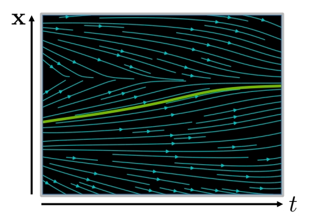
Analytical Solution:
$$ \mathbf{x} (t)=\mathbf{x} (0)+\int_{0}^{t} \mathbf{f} (\mathbf{x} ,\tau )d\tau $$
✅ 这个积分经常无法计算，因此把离散化。
Iterative Numerical Solution:
$$ \mathbf{x} (t+\Delta t)\approx \mathbf{x} (t)+\mathbf{f} (\mathbf{x} (t),t)\Delta t $$
Stochastic Differential Equation (SDE):
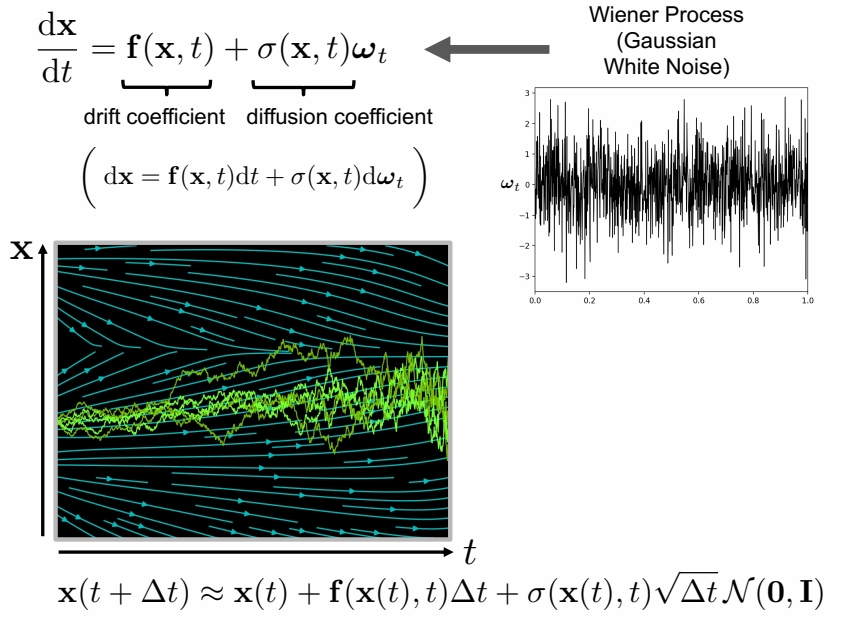
✅ \(\sigma \) 描述 noise 的 scale。\(\omega _ t\) 描述噪声。
✅ SDE 在每个时间步注入高斯白噪声。因此多次求解 \(\mathbf{x}(t)\) 的结果是不一样的。
一些术语
条件概率：某个事件在给定其他事件发生时出现的概率。
先验概率：事情还没发生，要求这件事情发生的可能性大小，这是先验概率。
后验概率：事情已经发生，要求这件事情发生的原因是由于某个因素引起的可能性大小，是后验概率。
经验分布：由已经发生的数据得到的分布
几率（odds）：一个事件的几率是指该事件的概率与该事件不发生的概率的比值$$\frac{p}{1-p}$$。
对数几率（log odds）：
$$
logit(p) = \log \frac{p}{1-p}
$$
最大似然估计：根据已经发生的数据，推测最有可能的概率模型。参考这篇文章link。
对数似然估计：
$$
\log \prod_{\text{每一种组合}}P(\text{组合})^{\text{组合出现的概率}}
$$
| 离散型变量 | 连续性变量 | |
|---|---|---|
| 概率分布 | 概率质量函数 $$x \sim P(x)$$ | 概率密度函数 $$x \sim p(x)$$ |
| 性质1 | 定义域必须是x所有可能的状态的集合 | 同 |
| 性质2 | $$\forall x, 0 \leq P(x) \leq 1$$ | $$\forall x, 0 \leq p(x)$$ Note:不要求$$p(x) \leq 1$$ |
| 性质3（归一化） | $$\sum_{a \in x}P(a) = 1$$ | $$\int p(x)dx = 1$$ |
| 部分概率 | P(x = a) | $$\int_a^b p(x)dx$$ |
| 联合分布 | P(X=x, Y=y) | |
| 边缘概率 | $$\forall a \in x, P(x=a)=\sum_{b \in y}P(x=a, y=b)$$ | $$p(x)=\int p(x,y)dy$$ |
| 条件概率 | $$P(y=b\mid x=a) = \frac {P(y=b, x=a)}{P(x=a)}$$ | $$P(A\mid B) = \frac{P(A,B)}{P(B)}$$ P()为连续型变量落入某一区间的概率 |
条件概率的链式法则
$$ P(A, B, C) = P(A|B,C)P(B|C)P(C) $$
独立
相互独立：P(A, B) = P(A)P(B)
条件独立：P(A, B | C) = P(A | C)P(B | C)
期望
离散型变量期望：
$$
E_{x\sim P}[f(x)] = \sum_x P(x)f(x)
$$
连续型变量期望：$$E_{x\sim P}[f(x)] = \int p(x)f(x)dx$$
方差
$$ Var(f(x)) = E[(f(x) - E[f(x)])^2] $$
标准差=$\sqrt \text{方差}$
协方差
两个变量线性相关性的强度以及这些变量的尺度
$$ Cov(f(x),g(x)) = E[(f(x)-E[f(x)])(g(x)-E[g(x)])] $$
意义（没看懂）：
- 绝对值很大：变量值变化很大，距离各自均值很远
- 负的：一个变量倾向于取得相对较大的值，另一个变量倾向于取得相对较小的值。反之亦然。
- 为0：没有线性关系，但不一定独立
协方差矩阵
$$ \begin{aligned} x \in R^n\ Cov(X){i,j} = Cov(X_i, X_j) \text{方阵}\ Cov(X){i,i} = Var(X_i) \end{aligned} $$
离散型变量的分布
Bernoulli 分布
单个二值随机变量的分布
$$ \begin{aligned} P(X=1) = \phi \ P(X=0) = 1 - \phi \ P(X=a) = \phi^a(a-\phi)^{(1-a)} \ E[x] = \phi \ Var(x) = \phi(1-\phi) \end{aligned} $$
Multinoulli 分布
具有k个不同状态的单个离散型随机变量的分布。
分布由向量$$p \in [0,1]^{k-1}$$参数化
$$ \begin{aligned} P(x = i) = p_i, i < k \ P(x = k) = 1 - \sum_{i}p_i \end{aligned} $$ 通常不计算方差和期望。
连续型变量的分布
Logistic分布
定义：Logistic分布
设X是连续随机变量，X服从逻辑分布是指X具有下列函数和密度函数：
分布函数：
$$
F(x) = P(X \le x) = \frac{1}{1+e^{-(x-\mu)/\gamma}}
$$

密度函数：
$$
f(x) = F^{'}(x) = \frac{e^{-(x-\mu)/\gamma}}{\gamma(1+e^{-(x-\mu)/\gamma})^2}
$$

其中：$$\mu$$为位置参数，$$\gamma$$是形状参数
正态分布（高斯分布）
$$ \mathcal N(x; \mu,\sigma^2) = \sqrt{-\frac {1}{2\pi\sigma^2}}exp(-\frac {1}{2\sigma^2}(x-\mu)^2) $$
当对数据缺乏先验知识时，正态分布是默认的比较好的选择。
标准正态分布：$$\mu=0, \sigma=1$$

多维正态分布
$$ \mathcal N(x; \mu,\Sigma^2) = \sqrt{-\frac {1}{(2\pi)^n|\Sigma|^2}}exp(-\frac {1}{2}(x-\mu)\Sigma (x-\mu)^T) $$
公式中$$x, \mu$$都是向量，$$\Sigma$$是对称半正定矩阵
各向同性(isotropic)高斯分布： $$ \Sigma = \text{标量} \times I $$
卡方分布
若n个相互独立的随机变量ξ₁，ξ₂，...,ξn ，均服从标准正态分布（也称独立同分布于标准正态分布），则这n个服从标准正态分布的随机变量的平方和构成一新的随机变量，其分布规律称为卡方分布（chi-square distribution）。
指数分布
$$ p(x;\lambda)= \begin {cases} \lambda \exp(-\lambda), && \text{if } x \ge 0 \ 0, && \text{if } x \le 0 \end{cases} $$
Laplace分布
$$ \text{Laplace}(x;\mu, r) = \frac{1}{2r}\exp(-\frac{|x-\mu|}{r}) $$
Dirac分布
$$ \begin{aligned} p(x) = \delta(x-\mu) = \begin {cases} \gt 0, & x = \mu \ = 0, & x \neq \mu \end {cases} \ \int p(x) = 1 \end{aligned} $$
意义：只有在定义连续型随机变量的经验公布时，$$\delta(x)$$才有意义
广义函数：依据积分性质定义的数学对象
先通过Mulitinoulli分布选择一个组件分布（component distribution）。
再从组件分布中选择一个样本。
潜变量：不能直接观测到的变量，例如Mulitinoulli分布中的变量
一般混合模型
一般混合模型是指具有如下形式的概率分布模型：
$$
P(y|\theta) = \sum_{k=1}^Ka_k\phi(y|\theta_k)
$$
其中：
$$a_k$$是系数，$$a_k \ge 0$$，且$$\sum_{k=1}^Ka_k=1$$
$$\phi(y|\theta_k)$$可以是概率分布密度。
组件i的先验概率（prior probability）：$$a_i = P(c=i)$$
组件i的后验概率（posterior probability），即观测到x之后组件i的概率：$$P(c=i|x)$$
高斯混合模型 Gaussian misture model
当$$\phi(y|\theta_k)$$为高斯分布密度，即
$$
\begin{aligned}
\phi(y|\theta_k) = \frac{1}{\sqrt {2\pi}\sigma_k}\exp(-\frac{(y-\mu_k)^2}{2\sigma_k^2}) \
\theta = (a1, a2, \cdots, a_k, \mu_1, \mu_2, \cdots, \mu_k, \sigma_1, \sigma_2, \cdots, \sigma_k)
\end{aligned}
$$
此时$$P(y|\theta)$$为高斯混合分布。
每个组件分布都高斯分布，且有自己的$$\mu$$和$$\Sigma$$。
高斯混合模型是概率密度的万能近似器（universal approximator），在这种意义下，任何平滑的概率密度都可以用具有足够多组件的高斯混合模型以任意精度来逼近。
特殊的高斯混合模型：
限制每个组件的协方差矩阵为对角的或者各向同性的(标量乘以单位矩阵）。
[?]各向同性
[TODO]cs229配置的数学部分有关于高斯混合模型的详细内容，还没做笔记。
F函数
假设隐变量数据Z的概率分布为$$\hat P(Z)$$，定义分布$$\hat P$$与参数$$\theta$$的函数$$F(\hat P, \theta)$$如下：
$$
F(\hat P, \theta) = E_{\hat P}[\log P(Y, Z|theta)] + H(\hat P)
$$
式中，$$H(\hat P) = -E_{\hat P}[\log \hat P(Z)]$$是分布$$\hat P(Z)$$的熵。
logistic sigmoid函数
$$ \sigma(x) = \frac{1}{1+\exp(-x)} $$

意义：
- $$\sigma(x) \in (0, 1)$$
- 通常用来产生Bernoulli分布中的参数$$\phi$$
- 当|x|非常大时会饱和，饱和是指$$\sigma'(x)$$的变化非常缓慢。
softplus函数
$$ \zeta(x) = \log(1+\exp(x)) $$

意义：
- $$\zeta(x) \in (0, +\infty)$$
- 用于产生高斯分布的$$\beta$$或$$\sigma$$参数，$$\beta = \frac{1}{\sigma^2}$$
- 是$$x_+ = max(0, x)$$函数是平滑形式
有用性质：

径向基函数 Radial Basis Function
将一个点到另一个点的距离映射成一个实值的函数。
这里面有三个未知：
（1）另一个点是什么点？默认是原点，也可以是指定点p。
（2）距离是什么距离？一般都使用欧氏距离
（3）对距离做怎样的操作？不同的RBF只要是这一点的不同。
欧氏径向基
距离为欧氏距离：
$$
\begin{aligned}
r(x) = ||x||_2 \
r(x, p) = ||x-p||_2
\end{aligned}
$$
操作为线性操作：
$$
\phi(r) = r
$$
高斯径向基
距离为欧氏距离
操作为高斯函数：
$$
\phi(r) = \exp(-\frac{r^2}{2\sigma^2})
$$
贝叶斯公式
$$ \begin{aligned} P(x|y) = \frac{P(x)P(y|x)}{P(y)} \ P(y) = \sum_x P(y|x)P(x) \end{aligned} $$
似然
假设真实存在一组数据集X = {x1, x2 , ..., xm}
X服从概率分布$$p(x|\theta)$$，参数$$\theta$$未知。
那么似然为真实存在的数据X发生的概率。用带参数$$\theta$$的函数来表示这个概率为：
$$
\begin{aligned}
P(X;\theta) = P(x^{(1)}|\theta)P(x^{(2)}|\theta)\cdots P(x^{(m)}|\theta) && {1}
\end{aligned}
$$
最大似然估计
由公式（1）知X发生的可能性与参数$$\theta$$有关。
我们希望X发生的可能性最大。
因此要找到一个合适的参数$$\theta$$，使得P(X;\theta)取到最大值。
即
$$
\begin{aligned}
\theta = {\arg \max}_{\theta} P(X;\theta) &&{2}
\end{aligned}
$$
公式（2）称为$$\theta$$的最大似然估计
对数似然估计
由于公式（1）是许多概率连乘的形式，使得公式（2）不便于计算。
由于$$P(X;\theta)$$和$$\log P(X;\theta)$$具有相同的趋势，$${\arg \max}{\theta} P(X;\theta)$$和$${\arg \max}{\theta} \log P(X;\theta)$$是等价的。
于是公式（2）转化为：
$$
\begin{aligned}
\theta & = & {\arg \max}{\theta} \log P(X;\theta) \
& = & {\arg \max}{\theta} \sum_{i=1}^m \log P(X^{(i)};\theta) &&{3}
\end{aligned}
$$
公式（2）称为最大对数似然估计
期望
同理，$${\arg \max}{\theta} \log P(X;\theta)$$和$${\arg \max}{\theta} \frac{1}{m}\log P(X;\theta)$$是等价的
于是公式（3）又转化成：
$$
\begin{aligned}
\theta & = & {\arg \max}{\theta} \sum{i=1}^m \log P(X^{(i)};\theta) \
& = & {\arg \max}{\theta} \frac{1}{m}\log P(X;\theta) \
& = & {\arg \max}{\theta} \sum_{i=1}^m \hat p(x^{(i)};\theta) \log p(x^{(i)};\theta) && {4} \
& = & {\arg \max}{\theta} E{X \sim \hat p_{data}} \log p_{model}(x;\theta) && {5}
\end{aligned}
$$
说明：
公式（4）（5）中的$$\hat p$$或$$\hat p_{data}$$代表样本的真实概率
公式（4）（5）中的$$p$$或$$\hat p_{model}$$代表模型预测的概率
交叉熵
公式（4）可以看是经验分布$$\hat p$$和模型分布$$p$$之间的差异，这种形式称为交叉熵。
KL离散度
两个分布差异程度可以用DL离散度表示。
$$
D_{KL} = E[\log p1 - \log p2]
$$
p1为经验分布，与模型与无关。
因此最小化KL离散度就是要最小化$$-E[\log p2]$$，即$$-E[\log p_{model}(x)]$$
频率派统计 VS 贝叶斯统计
以“最大似然估计”为代表的频率派统计和以“最大后验估计”为代表的贝叶斯统计是从两个不同的角度来看概率问题。
| 什么是定值 | 什么是随机变量 | 怎样求$\theta$ | |
|---|---|---|---|
| 频率派统计 | 参数$\theta$是一个未知的定值 | 以$\theta$为参数的x是随机变量，符合某种分布。 | x的分布是由$\theta$的决定的。不同的$\theta$会得到不同的分布。目标是寻找一个满足要求的$\theta$。这个要求就是“$\theta$对应的分布中，样本x出现的概率最大”。 |
| 贝叶斯统计 | x是一组已知的定值 | 参数$\theta$是随机变量，符合某种分布。关于$\theta$的分布有两种：先验分布$P(\theta)$、后验分布$P(\theta | x)$ |
后面很多都没看懂。
最大似然估计 VS 最大后验估计
最大似然估计是基于最大似然点的点估计
最大后验估计是基于先验估计和最大后验点的点估计
根据贝叶斯公式：
后验估计$P(\theta|x)$ = 先验证估计$P(\theta)$ * $P(\theta|x)$
类上一节类似点，先使对数似然最大的$\theta$：
$$
\theta_{MAP} = \arg\max_\theta P(\theta|x) = \arg\max_\theta \log P(x|\theta) + \log P(\theta)
$$
后面的看不懂了。
信息熵 entropy
自信息：表示一个事件的信息量，
$$
\begin{aligned}
I(x) = -\log P(x) && {1}
\end{aligned}
$$
如果公式（1）中的log以e为底，则I(x)单位是奈特（nats）。
如果公式（1）中的log以2为底，则I(x)单位是比特（bit）或者香农（shannons）。
熵（香农熵，Shannon Entropy）:表示整个概率分布的不确定性。
$$
\begin{aligned}
H(x) = E_{x\sim P}[I(x)] && {2}
\end{aligned}
$$
根据期望和方差中离散型变量期望的计算公式（公式1），可进一步得出：
$$
\begin{aligned}
H(x) = -\sum_{i=1}^nP(x_i)\log P(x_i) && {3}
\end{aligned}
$$
公式(3)中：
n: 该分布中x可以取n个不同的值
$$P(x_i)$$为x取第i个值的概率
公式（2）和（3）都是基于公式（1）计算的，因此公式中的log也可以以e为底或者以2为底，以上下文环境为准。
条件熵H(Y|X)：X给定条件下Y的条件概率分布的熵对X的数学期望
$$
\begin{aligned}
H(Y|X) = \sum_{i=1}^nH(Y|X=x_i)P(X=x_i)
\end{aligned}
$$
基尼指数：
$$
\begin{aligned}
Gini(p) = \sum^K p_k(1-p_k) = 1 - \sum^Kp_k^2
\end{aligned}
$$
f-divergence
$$ D_f(P||Q) = \int_x q(x)f\left(\frac{p(x)}{q(x)}\right)dx $$
且f(x) is convex && f(1) = 0
$D_f(P||Q)$用于评估分布P和分布Q的差异。
f(1) = 0 ==> 当p(x)=q(x)时，Df = 0
f is convex ==> Df >= f(1) = 0
令$f(x) = x\log x$，则Df是KL divergence
$$
D_f = \int_x p(x)\log\left(\frac{p(x)}{q(x)}\right)
$$
令$f(x) = -\log x$，则Df是reverse KL divergence
$$
D_f = \int_x q(x)\log\left(\frac{q(x)}{p(x)}\right)
$$
令$f(x) = (x-1)^2$，则Df是Chi Square Divergence
$$
D_f = \int_x\frac{(p(x)-q(x))^2}{q(x)}dx
$$
KL散度 KL divergence
有两个独立的分布P(x)和Q(x)，KL散度用于衡量这两个分布的差异。
$$ D_{KL}(P||Q) = E_{X\sim P}\left[\log \frac{P(x)}{Q(x)}\right] = E_{X\sim P}[\log P(x) - \log Q(x)] $$
交叉熵 cross-entropy
$$ H(P, Q) = -E_{X\sim P} \log Q(x) $$
最小化交叉熵等价于最小化KL散度。
JS散度 Jensen-Shannon
http://blog.sina.com.cn/s/blog_18bdda0da0102xzpw.html
Euler angles欧拉角
欧拉角是Leonhard Euler引入的三个角，用于描述刚体相对于固定坐标系的方向。[1]
它们还可以表示物理学中移动参考系的方向，或三维线性代数中一般基的方向。后来，彼得·古思里·泰特（Peter Guthrie Tait）和乔治·H·布莱恩（George H.Bryan）引入了另一种形式，用于航空和工程领域。
🔎
frame of reference：参考坐标系
basis：基
Chained rotations equivalence 链式旋转等效
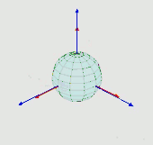 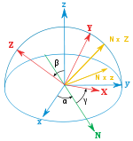
👆 从已知参考方向开始，使用特定的内旋序列，可以达到任何目标方向，其大小为目标方向的欧拉角。本例使用z-x′-z〃序列。
欧拉角可以通过基本几何或旋转组合来定义。几何定义表明，三个组合元素旋转（围绕坐标系的轴旋转）足以到达任何目标坐标系。
❓ 基本几何定义和组合旋转定义有什么区别？
三个元素旋转可以是外旋（围绕原始坐标系的轴xyz旋转，假设其保持不变），也可以是内旋（围绕旋转坐标系的轴XYZ旋转，与运动物体保持一致，在每次元素旋转后改变其方向）。
🔎
extrinsic rotations：外旋
intrinsic rotations：内旋
欧拉角通常表示为α、β、γ或ψ、θ、φ。不同的作者可以使用不同的旋转轴集来定义Euler角度，或者为相同的角度使用不同的名称。因此，任何使用欧拉角的讨论都应在其定义之后进行。
假设不会同时用两种不同约定来定义旋转轴（内旋或外旋），存在十二种可能的旋转轴序列，分为两组：
- Proper欧拉角（z-x-z，x-y-x，y-z-y，z-y-z，x-z-x，y-x-y）
- Tait–Bryan角（x-y-z，y-z-x，z-x-y，x-z-y，z-y-x，y-x-z）。
Tait–Bryan角也称为卡丹角、航海角、行进方向，高度，边坡、或偏航，俯仰，和横滚。有时，这两种序列都被称为“欧拉角”。在这种情况下，第一组的序列称为proper欧拉角或经典欧拉角。
Proper Euler angles Proper欧拉角

👆 Proper欧拉角几何定义：固定坐标系（x、y、z）、旋转坐标系（X、Y、Z）、交点线（N）
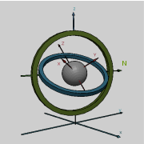 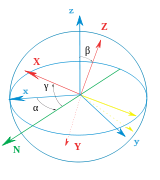
👆 左：万向节组，显示z-x-z旋转序列。底座为外部坐标第。内部轴为红色。右图：一个简单的图，在图显示相似的欧拉角。
📌 以下内容全部假设旋转顺序为z-x-z
几何定义
The axes of the original frame are denoted as x, y, z and the axes of the rotated frame as X, Y, Z. The geometrical definition (sometimes referred to as static) begins by defining the line of nodes (N) as the intersection of the planes xy and XY (it can also be defined as the common perpendicular to the axes z and Z and then written as the vector product N = z \times Z). Using it, the three Euler angles can be defined as follows:
原始坐标系的轴表示为x，y，z，旋转框架的轴表示为X，Y，Z.几何定义（有时称为静态）首先将交点线（N）定义为平面xy和XY的相交的线（也可以定义为同时与轴z轴和Z轴垂直的线，因此写为向量积 \(N=z \times Z\)）。使用它，三个欧拉角可以定义如下：
✅ line of nodes：交点线
- \(\alpha\)（或\(\varphi\)）是x轴和N轴之间的有符号角度（x约定–也可以在y和N之间定义，称为y约定）。
📌
A轴与B轴之间的夹角，另一种表达方式是，以\(A\times B\)为轴，从A到B的旋转角度
N在xy平面上，因此x与N的夹角可以看作是以z为轴在xy平面上的转动
- \(\beta\)（或\(\theta\)）是z轴和Z轴之间的角度。
📌
只有第二次旋转会导致z->Z
- \(\gamma\)（或\(\psi\)）是N轴和X轴之间的有符号角度（X约定）。
📌
N在XY平面上，因此N与X的夹角可以看作是以Z为轴在XY平面上的转动
仅当两个参照系具有相同的惯用手时，才定义两个参照系之间的欧拉角。
内旋
内旋是围绕附着到移动物体的坐标系XYZ的轴发生的基本旋转。因此，它们在每次元素旋转后都会改变方向。XYZ系统会旋转，而xyz是固定的。三个内旋组合可使XYZ达到任何目标方向。
📌
初始时，XYZ和xyz重叠
Euler angles can be defined by intrinsic rotations. The rotated frame XYZ may be imagined to be initially aligned with xyz, before undergoing the three elemental rotations represented by Euler angles. Its successive orientations may be denoted as follows:
欧拉角可以通过内旋序列来定义。旋转的后的XYZ坐标系可以想象为先让XYZ与xyz对齐，然后经历由欧拉角表示的三个元素旋转。其连续方向可表示如下：
- x-y-z, or x0-y0-z0 （初始值）
- x′-y′-z′, or x1-y1-z1 （第一次旋转后）
- x″-y″-z″, or x2-y2-z2 （第二轮后）
- X-Y-Z, or x3-y3-z3 （最终）
📌
以哪个为轴旋转，那个轴旋转前后不变，因此，z=z',z''=Z,x'=x''
For the above-listed sequence of rotations, the line of nodes N can be simply defined as the orientation of X after the first elemental rotation. Hence, N can be simply denoted x′. Moreover, since the third elemental rotation occurs about Z, it does not change the orientation of Z. Hence Z coincides with z″. This allows us to simplify the definition of the Euler angles as follows:
对于上面列出的旋转序列，交点线N可以简单地定义为第一个元素旋转后X的方向。因此，N可以简单地表示为x′。此外，由于第三次元素旋转发生在Z附近，因此不会改变Z的方向。因此，Z与z〃重合。这使我们可以简化欧拉角的定义，如下所示：
📌
N可以简单地表示为x′: 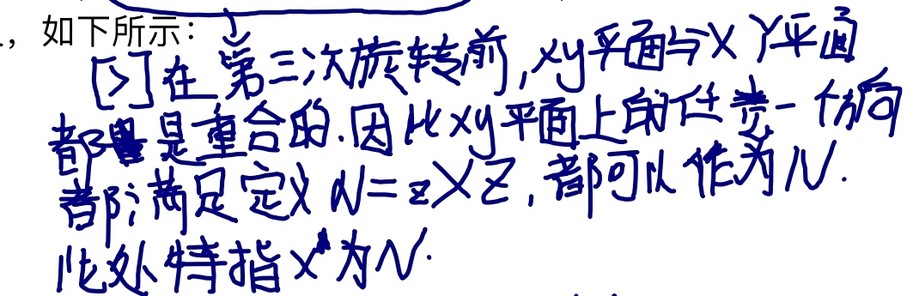
- α（或\(\varphi\)）表示绕z轴旋转，
📌
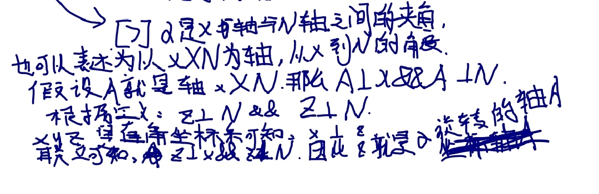
-
β（或\(\theta\)）表示绕x′轴旋转，
-
γ（或\(\psi\)）表示绕z〃轴旋转。
📌
同理，z是γ的旋转轴，Z=z''
外旋
Extrinsic rotations are elemental rotations that occur about the axes of the fixed coordinate system xyz. The XYZ system rotates, while xyz is fixed. Starting with XYZ overlapping xyz, a composition of three extrinsic rotations can be used to reach any target orientation for XYZ. The Euler or Tait–Bryan angles (α, β, γ) are the amplitudes of these elemental rotations. For instance, the target orientation can be reached as follows (note the reversed order of Euler angle application):
外旋是围绕固定坐标系xyz的轴发生的基本旋转。XYZ系统会旋转，而xyz是固定的。从XYZ重叠xyz开始，三个外旋的组合可使XYZ达到任何目标方向。Euler角或Tait–Bryan角（α、β、γ）是这些元素旋转的幅度。例如，目标方向可按如下方式实现（注意应用Euler角的相反顺序）：
📌
注意应用Euler角的相反顺序：
内旋和外旋的顺序不一样
内旋：α->β->γ
外旋：γ->β->α
-
XYZ系统绕z轴旋转γ。X轴现在与x轴成角度γ。
-
XYZ系统再次旋转，但这次绕x轴旋转β。Z轴现在与z轴成角度β。
-
XYZ系统第三次绕z轴旋转角度α。
总之，三个元素的旋转发生在z、x和z附近。事实上，这个序列通常表示为z-x-z（或3-1-3）。与Proper Euler角和Tait–Bryan角关联的旋转轴集通常使用此符号命名（有关详细信息，请参见上文）。
符号、范围和约定
通常根据右手法则定义角度。也就是说，当它们从轴的正方向上看显示顺时针时，它们具有正值；当旋转显示为逆时针时，它们具有负值。相反的惯例（左手法则）很少被采用。
关于范围（使用区间表示法）：
-
对于α和γ，范围定义为模2π弧度。例如，有效范围可以是[−π, π].
-
对于β，范围包括π弧度（但不能说是模π）。例如，它可以是[0， π] 或[−π/2, π/2].
❓
但不能说是模π:?
The angles α, β and γ are uniquely determined except for the singular case that the xy and the XY planes are identical, i.e. when the z axis and the Z axis have the same or opposite directions. Indeed, if the z axis and the Z axis are the same, β = 0 and only (α + γ) is uniquely defined (not the individual values), and, similarly, if the z axis and the Z axis are opposite, β = π and only (α − γ) is uniquely defined (not the individual values). These ambiguities are known as gimbal lock in applications.
角度α、β和γ是唯一确定的，但xy和XY平面相同的奇异情况除外，即z轴和Z轴方向相同或相反。事实上，如果z轴和Z轴相同，则β=0且只有（α+γ）是唯一定义的（不是单个值），并且，类似地，如果z轴和Z轴相反，则β=π且只有（α）− γ） 是唯一定义的（不是单个值）。这些歧义在应用程序中称为万向节锁。
📌
角度α、β和γ是唯一确定的：α、β、γ是独立的
（α）− γ） 是唯一定义的：β为定值，α和γ不独立，这种情况称为万向节死锁
Proper欧拉角的旋转轴有六种可能的序列。在所有这些轴中，第一和第三旋转轴相同。六种可能的顺序是：
-
z1-x′-z2″ (内旋) or z2-x-z1 (外旋)
-
x1-y′-x2″ (内旋) or x2-y-x1 (外旋)
-
y1-z′-y2″ (内旋) or y2-z-y1 (外旋)
-
z1-y′-z2″ (内旋) or z2-y-z1 (外旋)
-
x1-z′-x2″ (内旋) or x2-z-x1 (外旋)
-
y1-x′-y2″ (内旋) or y2-x-y1 (外旋)
进动、章动和内旋
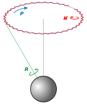
👆 Euler basic motions of the Earth. Intrinsic (green), Precession (blue) and Nutation (red) 地球的基本运动。内旋（绿色）、进动（蓝色）和章动（红色）
Precession, nutation, and intrinsic rotation (spin) are defined as the movements obtained by changing one of the Euler angles while leaving the other two constant. These motions are not expressed in terms of the external frame, or in terms of the co-moving rotated body frame, but in a mixture. They constitute a mixed axes of rotation system, where the first angle moves the line of nodes around the external axis z, the second rotates around the line of nodes N and the third one is an intrinsic rotation around Z, an axis fixed in the body that moves.
进动、章动和内旋（自旋）被定义为改变其中一个欧拉角而保持另两个不变的运动。这些运动不是用外部框架表示的，也不是用共同运动的旋转体框架表示的，而是用一种混合物表示的。它们构成混合旋转轴系统，其中第一个角度围绕外部轴z移动交点线，第二个角度围绕交点线N旋转，第三个角度围绕Z旋转，Z轴固定在移动的主体中。
静态定义意味着：
-
α（进动）表示绕z轴旋转，
-
β（章动）表示绕N或x′轴旋转，
-
γ（内旋）表示绕Z轴或z〃轴的旋转。
如果β为零，则不存在关于N的旋转。因此，Z与z重合，α和γ表示围绕同一轴（z）的旋转，且最终方向可通过围绕z的单个旋转获得，旋转角度等于α+γ。
作为一个例子，考虑顶部。顶部围绕其自身的对称轴旋转；这与它的内旋相对应。它也围绕其枢轴旋转，其质心围绕枢轴旋转；这种旋转是进动。最后，顶部可以上下摆动；倾角就是章动角。地球的运动也可以看到同样的例子。
虽然这三种运动都可以在某一坐标系中用系数恒定的旋转算子来表示，但它们不能同时用这些算子来表示。给定一个参考系，其中最多有一个是无系数的。一般来说，只有进动可以表示为空间基上的矩阵，而不依赖于其他角度。
These movements also behave as a gimbal set. If we suppose a set of frames, able to move each with respect to the former according to just one angle, like a gimbal, there will exist an external fixed frame, one final frame and two frames in the middle, which are called "intermediate frames". The two in the middle work as two gimbal rings that allow the last frame to reach any orientation in space.
这些运动还表现为万向节装置。如果我们假设一组框架能够像一个万向节一样根据一个角度来移动前者，则将存在一个外部固定框架、一个最终框架和中间两个框架，这被称为“中间框架”。中间的两个工作为两个万向环，允许最后一个框架在空间中到达任何方位。
泰特-布赖恩角
另见：飞机主轴
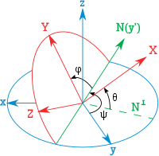
👆 泰特-布莱恩角。z-y′-x〃序列（内旋；N与y′重合）。角度旋转序列为ψ，θ，φ。注意，在这种情况下，ψ>90°，θ为负角度。
第二种形式被称为泰特-布莱恩角，以Peter Guthrie Tait 和George H. Bryan命名。这是通常用于航空航天应用的惯例，因此零度仰角表示水平姿态。Tait–Bryan角表示飞机相对于世界坐标系的方向。在处理其他车辆时，可以使用不同的轴约定。
定义
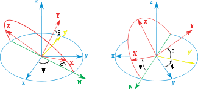
👆 泰特-布莱恩角。z-x′-y〃序列（内旋；N与x′重合）
Tait–Bryan角使用的定义和符号与上述适用于Euler角的定义和符号类似（几何定义、内旋定义、外旋定义）。唯一的区别是，Tait–Bryan角表示围绕三个不同轴（例如x-y-z或x-y′-z〃）的旋转，而Proper Euler角对第一个和第三个元素旋转（例如z-x-z或z-x′-z〃）使用相同的轴。
这意味着几何构造中交点线的定义不同。在Proper欧拉角情况下，它被定义为两个同源笛卡尔平面之间的交线（当欧拉角为零时平行；例如xy和XY）。在Tait–Bryan角的情况下，它被定义为两个非同源平面的交点（当Euler角为零时垂直；例如xy和YZ）。
❓
笛卡尔平面？
为什么旋转轴不同会导致line of nodes的定义不同？
为什么要定义line of nodes?
约定
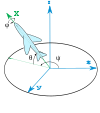
👆 飞机的机载和地面跟踪站的机载ENS轴的Heading, elevation and bank（Z-Y′-X〃）。固定参考坐标系x-y-z表示跟踪站。机载轴Y和Z未显示。X以绿色显示。此图不符合RHS规则：y轴必须反转为正角度符合RHS。
📌
RHS:右手坐标系法则
三个元素旋转可以围绕原始坐标系的轴发生，该坐标系保持不变（外旋），或者围绕旋转坐标系的轴发生，旋转坐标系的轴在每个元素旋转后改变其方向（内旋）。
Tait–Bryan角度的旋转轴序列有六种选择。六种可能的顺序是：
-
x-y′-z″ (内旋) or z-y-x (外旋)
-
y-z′-x″ (内旋) or x-z-y (外旋)
-
z-x′-y″ (内旋) or y-x-z (外旋)
-
x-z′-y″ (内旋) or y-z-x (外旋)
-
z-y′-x″ (内旋) or x-y-z (外旋): the intrinsic rotations are known as: yaw, pitch and roll 内在旋转被称为：yaw, pitch 和 roll
-
y-x′-z″ (内旋) or z-x-y (外旋)
📌
内旋和外旋的顺序是反的
符号和范围
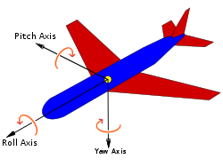
👆 根据航空标准DIN 9300定义的飞机主轴。请注意，零度角时，固定坐标系和移动坐标系必须重合。因此，该规范还将强制定义了参考系统中的兼容轴约定
泰特-布莱恩公约广泛应用于工程中，有着不同的目的。在选择移动轴和固定轴的应用中，有几种轴约定，这些约定决定了角度的符号。因此，必须仔细研究每种情况下的角度符号。
📌
轴约定：特定的旋转轴顺序
角度ψ和φ的范围是2π弧度。对于θ，范围是π弧度。
备选名称
These angles are normally taken as one in the external reference frame (heading, bearing), one in the intrinsic moving frame (bank) and one in a middle frame, representing an elevation or inclination with respect to the horizontal plane, which is equivalent to the line of nodes for this purpose.
这些角度通常在外部参考坐标系（航向、方位）中取一个，在内部移动坐标系（bank）中取一个，在中间框架中取一个，表示相对于水平面的高程或倾角，相当于用于此目的的交点线。
❓
这一段没看懂
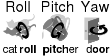
👆 记住角度名称的助记符
对于飞机来说，如果按照正确的顺序绕其主轴旋转三次就可以得到特定角度的坐标系。偏航将获得轴承，俯仰将产生仰角，滚转将产生倾斜角度。因此，在航空航天中，它们有时被称为偏航、俯仰和滚转。请注意，如果以任何其他顺序旋转，或者旋转前飞机轴处于不与参考坐标系相等的其它任何位置，则这套名称不适用。
Tait–Bryan angles, following z-y′-x″ (intrinsic rotations) convention, are also known as nautical angles, because they can be used to describe the orientation of a ship or aircraft, or Cardan angles, after the Italian mathematician and physicist Gerolamo Cardano, who first described in detail the Cardan suspension and the Cardan joint.
Tait–Bryan角，遵循z-y′-x〃（内旋）惯例，也被称为海角，因为它们可以用来描述船只或飞机的方向，或者卡丹角，以意大利数学家和物理学家Gerolamo Cardano的名字命名，他首先详细描述了Cardan suspension和Cardan joint。
给定坐标系的角度
A common problem is to find the Euler angles of a given frame. The fastest way to get them is to write the three given vectors as columns of a matrix and compare it with the expression of the theoretical matrix (see later table of matrices). Hence the three Euler Angles can be calculated. Nevertheless, the same result can be reached avoiding matrix algebra and using only elemental geometry. Here we present the results for the two most commonly used conventions: ZXZ for proper Euler angles and ZYX for Tait–Bryan. Notice that any other convention can be obtained just changing the name of the axes.
一个常见的问题是求给定坐标系的欧拉角。获取它们的最快方法是将三个给定向量写成矩阵的列，并将其与理论矩阵的表达式进行比较（见后面的矩阵表）。因此，可以计算三个欧拉角。然而，避免使用矩阵代数和仅使用元素几何也可以得到相同的结果。这里我们给出了两种最常用的约定的结果：ZXZ表示适当的欧拉角，ZYX表示Tait–Bryan。请注意，只要更改轴的名称，就可以获得任何其他约定。
📌
三个给定向量：XYZ在xyz坐标系中的坐标向量
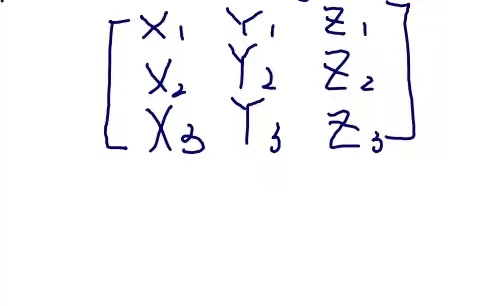
理论矩阵：见6.1节
Proper欧拉角
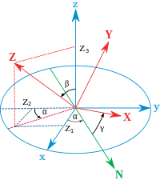
👆 Z向量的投影
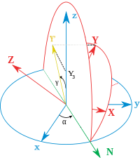
👆 Y向量的投影
假设一个坐标系的单位向量（X，Y，Z）由其坐标给出，如主图所示，可以看出：
$$ \cos(\beta )=Z_{3}. $$
又由于
$$ \sin ^{2}x=1-\cos ^{2}x, $$
定义\(\displaystyle 0<x<\pi \) 我们得出
$$ \sin(\beta )={\sqrt {1-Z_{3}^{2}}}. $$
As \(Z_{2}\) is the double projection of a unitary vector,
因为\(Z_{2}\)是酉向量的双重投影，
❓
酉向量？
$$ \cos(\alpha) \cdot \sin(\beta) = -Z_2, \cos(\alpha) = -Z_2 / \sqrt{1 - Z_3^2}. $$
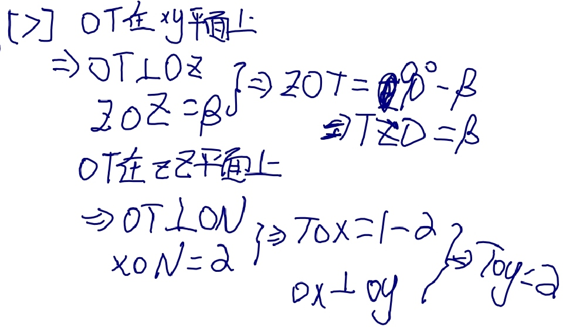
There is a similar construction for \(Y_{3}\), projecting it first over the plane defined by the axis z and the line of nodes. As the angle between the planes is \(\pi /2-\beta\) and \(\cos(\pi /2-\beta )=\sin(\beta )\), this leads to:
\(Y_{3}\)也有类似的构造，首先将其投影到由z轴和交点线定义的平面上。由于平面之间的角度为\(\pi/2-\beta\)，又\(\cos（\pi/2-\beta）=\sin（\beta）\)，得出：
$$ \sin(\beta )\cdot \cos(\gamma )=Y_{3}, \cos(\gamma )=Y_{3}/{\sqrt {1-Z_{3}^{2}}} $$
最后，使用反余弦函数，
$$ {\displaystyle \alpha =\arccos \left(-Z_{2}/{\sqrt {1-Z_{3}^{2}}}\right),} {\displaystyle \beta =\arccos \left(Z_{3}\right),} {\displaystyle \gamma =\arccos \left(Y_{3}/{\sqrt {1-Z_{3}^{2}}}\right).} $$
泰特-布赖恩角
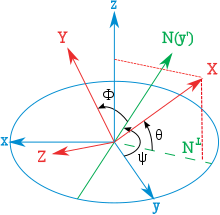
👆 三次泰特-布莱恩旋转后的x轴投影。请注意，θ是绕y′轴的负旋转。
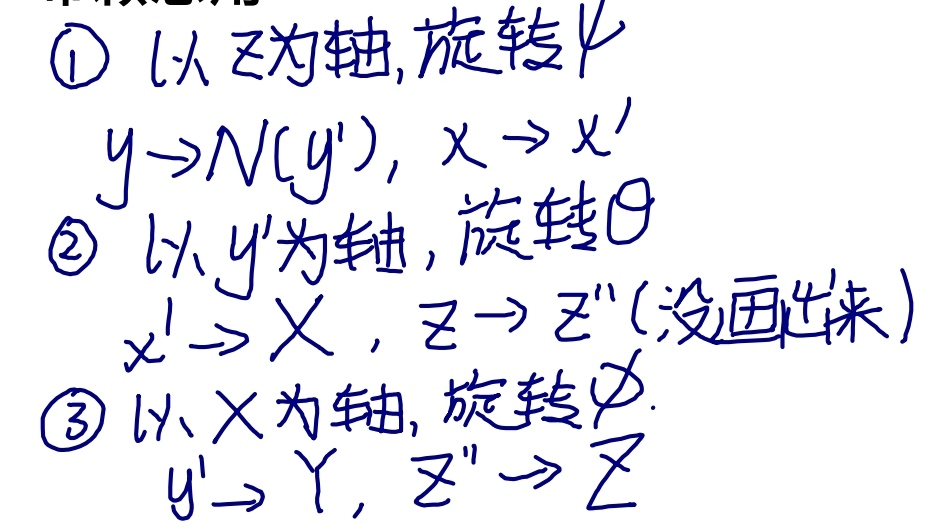
假设一个坐标系的单位向量（X，Y，Z）由其坐标给出，如下图所示（注意角度θ为负），可以看出：
$$ {\displaystyle \sin(\theta )=-X_{3}} $$
和前面一样
$$ {\displaystyle \cos ^{2}x=1-\sin ^{2}x,} $$
定义
$$ {\displaystyle -\pi /2<x<\pi /2} $$
我们得出
$$ {\displaystyle \cos(\theta )={\sqrt {1-X_{3}^{2}}}.} $$
以与前一种类似的方式表达：
$$ {\displaystyle \sin(\psi )=X_{2}/{\sqrt {1-X_{3}^{2}}}.} {\displaystyle \sin(\phi )=Y_{3}/{\sqrt {1-X_{3}^{2}}}.} $$
另一种与前一个类似的表达式：
$$ {\displaystyle \psi =\arcsin \left(X_{2}/{\sqrt {1-X_{3}^{2}}}\right),} {\displaystyle \theta =\arcsin(-X_{3}),} {\displaystyle \phi =\arcsin \left(Y_{3}/{\sqrt {1-X_{3}^{2}}}\right).} $$
结语
请注意，反正弦和余弦函数对同一参数会生成两个可能的值。在当前几何描述中，只有一个解是有效的。当欧拉角定义为一系列旋转时，所有解都有效，但在角度范围内只有一个解。这是因为如果之前未定义范围，则到达目标坐标系的旋转序列不是唯一的。[2]
出于计算目的，使用atan2（y，x）表示角度可能很有用。例如，在Proper欧拉角情况下：
$$ \alpha = \operatorname{atan2}(Z_1 , -Z_2),
\gamma =\operatorname {atan2} (X_{3},Y_{3}). $$
❓
使用atan2表达角度能简化哪方面计算？
什么是atan2？
转换为其他方向表示法
将三维旋转表示为单位四元数而不是矩阵有一些优点：
- 把旋转串联起来在计算上更快，在数值上更稳定。
❓
在数值上更稳定：为什么四元比旋转矩阵更稳定？
-
提取角度和旋转轴更简单。
-
插值更直接。参见示例slerp。
📌
插值更直接：四元数可以直接插值，旋转矩阵直接插值得到的不一定是旋转矩阵
- 四元数不像欧拉角那样受到万向节锁的影响。
无论如何，旋转矩阵计算是获得其他两种表示的第一步。
Rotation matrix 旋转矩阵
从一个已知的标准方向开始，通过三个元素旋转组合可以达到任何一个方向。等价地，任何旋转矩阵R都可以分解为三个元素旋转矩阵的乘积。例如：
$$ R=X(\alpha )Y(\beta )Z(\gamma ) $$
是一个旋转矩阵，可用于表示绕z、y、x轴（按该顺序）的外旋组合，或绕x-y′-z〃轴（按该顺序）的内部旋转组合。然而，元素旋转矩阵X、Y、Z的定义及其乘法顺序取决于用户对旋转矩阵和欧拉角的定义所做的选择（例如，请参见旋转矩阵定义中的歧义）。不幸的是，用户在不同的上下文中采用了不同的约定集。下表是根据这组约定建立的：
📌
绕z、y、x轴（按该顺序）：每一次外旋用矩阵左乘表示，所以看上去顺序是反的
绕x-y′-z〃轴（按该顺序）：内旋用矩阵右乘表示
- 每个矩阵都要通过左乘列向量\(\textstyle{\begin{bmatrix}x\y\z\end{bmatrix}}}\)进行操作（请参见旋转矩阵定义中的歧义）
📌
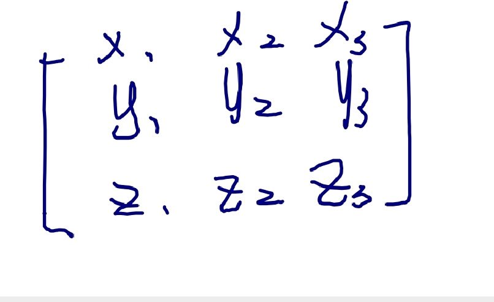
- Each matrix is meant to represent an active rotation (the composing and composed matrices are supposed to act on the coordinates of vectors defined in the initial fixed reference frame and give as a result the coordinates of a rotated vector defined in the same reference frame).
每个矩阵表示一次旋转（等式左边的矩阵和右边的矩阵都可以应用于初始固定参考坐标系中定义的向量坐标，并给出相同参考坐标系中定义的旋转后的向量坐标）。
- Each matrix is meant to represent, primarily, a composition of intrinsic rotations (around the axes of the rotating reference frame) and, secondarily, the composition of three extrinsic rotations (which corresponds to the constructive evaluation of the R matrix by the multiplication of three truly elemental matrices, in reverse order).
每个矩阵可以表示内在旋转的组合（围绕旋转参考坐标系的轴），也可以表示三个外在旋转的组合（对应地通过将三个元素矩阵以相反顺序相乘构造出R矩阵的值）。
- Right handed reference frames are adopted, and the right hand rule is used to determine the sign of the angles α, β, γ.
采用右手坐标系，用右手法则确定角度α、β、γ的符号。
For the sake of simplicity, the following table of matrix products uses the following nomenclature:
为了简单起见，下表中的矩阵乘积使用了以下术语：
- 1, 2, 3 represent the angles α, β and γ, i.e. the angles corresponding to the first, second and third elemental rotations respectively.
1、2、3表示角度α、β和γ，即分别对应于第一、第二和第三元素旋转的角度。
- X, Y, Z are the matrices representing the elemental rotations about the axes x, y, z of the fixed frame (e.g., X1 represents a rotation about x by an angle α).
X、 Y，Z是表示关于固定坐标系的轴x，y，z的基本旋转的矩阵（例如，X1表示关于x的角度α的旋转）。
- s and c represent sine and cosine (e.g., s1 represents the sine of α).
s和c表示正弦和余弦（例如，s1表示α的正弦）。
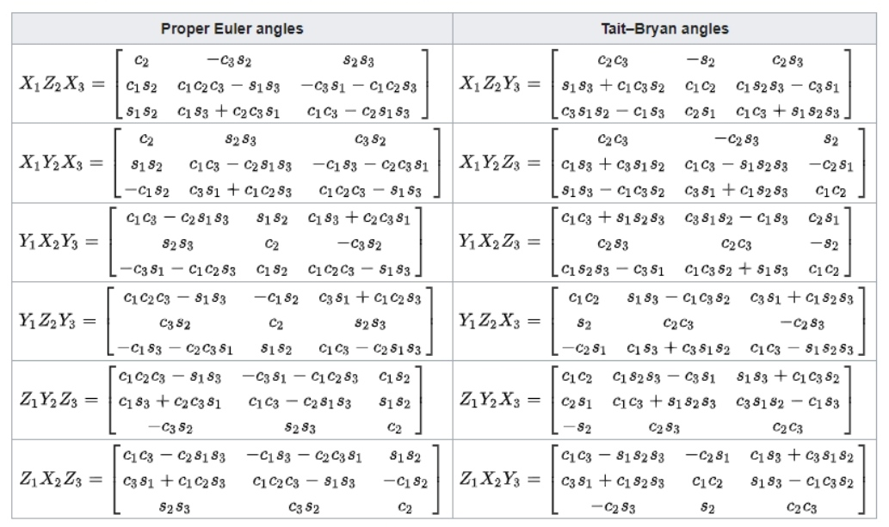
These tabular results are available in numerous textbooks.[3] For each column the last row constitutes the most commonly used convention.
这些表格结果在许多教科书中都有。[3] 对于每一列，最后一行构成最常用的约定。
要更改被动旋转的公式（或查找反向主动旋转），对矩阵做转置（这样每个矩阵将向量的初始坐标变换为基在旋转参考系中的表达；相同的旋转轴，相同的角度，但现在坐标系旋转，而不是向量）。
📌
被动旋转：坐标系发生旋转，向量不变，则它在坐标系中的方向发生了改变
主动旋转：在一个固定坐标系中，方向发生旋转。
❓
passive rotations?
reverse active rotation?
📌
现在坐标系旋转，而不是向量：前者是xyz在XYZ中的表达，后者是XYZ在xyz中的表达
The following table contains formulas for angles α, β and γ from elements of a rotation matrix R.[4]
下表包含旋转矩阵R关于角度α、β和γ的元素的公式[4]
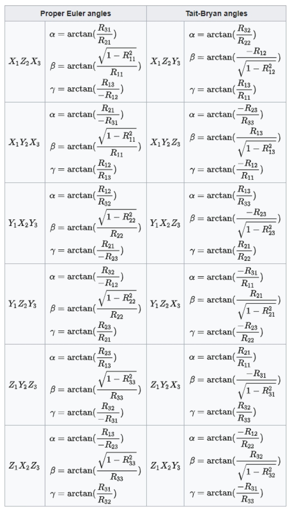
优势与局限性
欧拉角表示法同样广泛应用，尤其在系统设计与控制领域。
直观
通过三次绕坐标轴的旋转（每次旋转对应一个角度）表示任意三维旋转。
局限性
- 与定义的旋转顺序有关。在Unity引擎中的顺序为：先绕Z轴旋转 → 再绕X轴旋转 → 最后绕Y轴旋转。
- 特定状态下会丢失自由度：例如万向节死锁（Gimbal Lock）现象；
- 旋转角速度的数学定义困难。
Quaternion 四元数

在数学中，四元数系统扩展了复数。 四元数由爱尔兰数学家威廉·罗文·Hamilton于 1843 年[1][2] 首次描述，并应用于三维空间的力学。 Hamilton将四元数定义为三维空间中两条有向线的商，[3] 或者等效地，定义为两个向量的商。 [4] 四元数的乘法是不可交换的。
📌
两个向量的商：最初引入四元数是为了定义向量的除法
四元数一般用以下形式表示
$$ {\displaystyle a+b\ \mathbf {i} +c\ \mathbf {j} +d\ \mathbf {k} } $$
其中 a、b、c 和 d 是实数； i, j, k 是基本四元数。
四元数用于纯数学，但在应用数学中也有实际用途，特别是用于涉及三维旋转的计算，例如三维计算机图形学、计算机视觉和晶体纹理分析。 [5] 它们可以与其他旋转方法一起使用，例如欧拉角和旋转矩阵，或者作为它们的替代方法，具体取决于应用程序。
定义
四元数的表达形式为
$$ {\displaystyle a+b,\mathbf {i} +c,\mathbf {j} +d,\mathbf {k} \ ,} $$
其中 a、b、c、d 是实数，i、j、k 是可以解释为指向三个空间轴的单位向量的符号。 在实际应用中，如果a、b、c、d之一为0，则省略对应项； 如果a、b、c、d都为零，则该四元数是零四元数，记为0； 如果 b、c、d 中的一个等于 1，则相应的项只写为 i、j 或 k。
或
$$ \mathbf{q} = \begin{bmatrix} \mathbf{s} &\mathbf{v} \end{bmatrix} $$
s为标量，v为向量
计算
\(a\mathbf{q} =\begin{bmatrix} as &a\mathbf{v} \end{bmatrix}\quad\) Scalar-quaternion Multiplication
\(\mathbf{q} _1±\mathbf{q} _2 =\begin{bmatrix} \mathbf{s}_1±\mathbf{s}_2 & \mathbf{v} _1 ± \mathbf{v} _2 \end{bmatrix}\quad\quad\) Addition/Subtraction
\(\mathbf{q} _1×\mathbf{q} _2= \begin{bmatrix} \mathbf{s} _1\mathbf{s} _2−\mathbf{v} _1\cdot \mathbf{v} _2 & \mathbf{s} _1\mathbf{v} _2+\mathbf{s} _2\mathbf{v} _1+\mathbf{v} _1×\mathbf{v} _2 \end{bmatrix}\quad\quad\) Multiplication
\(||\mathbf{q} ||=\sqrt{\mathbf{s^2+v\cdot v} } \quad\quad\)Magnitude
和分量标量乘法
📌
分量标量乘：依次让每个分量的系数与一个标量相乘。
标量即0维数字
$$ {\displaystyle \lambda (a+b,\mathbf {i} +c,\mathbf {j} +d,\mathbf {k} )=\lambda a+(\lambda b),\mathbf {i} +(\lambda c),\mathbf {j} +(\lambda d),\mathbf {k} .} $$
性质
不可交换：q2q1 != q1q2 结合：(q1q2)q3 = q1(q2q3) 满足乘法结合律和加法分配律
根据Hamilton 积的定义每个非零四元数都有逆：
$$ {\displaystyle (a+b,\mathbf {i} +c,\mathbf {j} +d,\mathbf {k} )^{-1}={\frac {1}{a^{2}+b^{2}+c^{2}+d^{2}}},(a-b,\mathbf {i} -c,\mathbf {j} -d,\mathbf {k} ).} $$
用四元数表示旋转
角轴转四元数

四元数转旋转
$$
\mathbf{R}=\begin{bmatrix}
s^2+x^2-y^2-z^2 & 2(xy-sz) & 2(xz+sy)\\
2(xy+sz) & s^2-x^2+y^2-z^2 & 2(yz-sx) \\
2(xz-sy) & 2(yz+sx) & s^2-x^2-y^2+z^2
\end{bmatrix}
$$
优势与局限性
优势
- 不易受到“万向节死锁”的影响。
- 比矩阵更快、更紧凑。
- 插值结果更稳定。
Rotation matrix 旋转矩阵
在线性代数中，旋转矩阵是用于在欧几里得空间中执行旋转的变换矩阵。
旋转矩阵是行列式 1 的正交矩阵。旋转矩阵描述了围绕原点的旋转。
旋转矩阵的逆是它的转置，也是一个旋转矩阵。
两个旋转矩阵的乘积是一个旋转矩阵。
对于 n > 2，n × n 旋转矩阵的乘法通常是不可交换的。
二维旋转矩阵
二维旋转矩阵具有以下形式：
$$ {\displaystyle R={\begin{bmatrix}\cos \theta &-\sin \theta \\sin \theta &\cos \theta \end{bmatrix}}} $$
通过以下矩阵乘法旋转列向量，
$$ {\displaystyle {\begin{bmatrix}x'\y'\\end{bmatrix}}={\begin{bmatrix}\cos \theta &-\sin \theta \\sin \theta &\cos \theta \\end{bmatrix}}{\begin{bmatrix}x\y\\end{bmatrix}}.} $$
因此，点 (x, y) 旋转后的新坐标 (x′, y′) 为
$$ {\displaystyle {\begin{aligned}x'&=x\cos \theta -y\sin \theta ,\y'&=x\sin \theta +y\cos \theta ,\end{aligned}}.} $$
[success]

Direction 方向
如果 $$θ$$ 为正（例如 90°），则矢量旋转方向为逆时针方向，如果 $$θ$$ 为负（例如 -90°），则矢量旋转方向为顺时针。 因此，顺时针旋转矩阵为
$$ {\displaystyle R(-\theta )={\begin{bmatrix}\cos \theta &\sin \theta \-\sin \theta &\cos \theta \\end{bmatrix}}.} $$
二维旋转矩阵组是唯一非平凡的（即非一维）可交换情况，因此执行多次旋转的顺序无关紧要。 另一种约定使用旋转轴，[1] 并且上述矩阵也表示轴顺时针旋转角度 $$θ$$。
- ^ 请注意，如果不是旋转矢量，而是旋转参考系，则 sin θ 项上的符号将反转。 如果参考系 A 绕原点逆时针旋转角度 θ 以创建参考系 B，则 Rx（符号翻转）会将参考系 A 坐标中描述的矢量转换为参考系 B 坐标。
常见的旋转矩阵
特别有用的矩阵是
$$ {\displaystyle {\begin{bmatrix}0&-1\[3pt]1&0\\end{bmatrix}},\quad {\begin{bmatrix}-1&0\[3pt]0&-1\\end{bmatrix}},\quad {\begin{bmatrix}0&1\[3pt]-1&0\\end{bmatrix}}} $$
三维旋转矩阵
基本旋转（也称为元素旋转）是围绕其中一个坐标轴的旋转。 可以使用矩阵乘法从这三个矩阵得到其他旋转矩阵。
Conversions 转换
Quaternion 四元数
Polar decomposition 极性分解
Axis and angle 轴和角度
Euler angles 欧拉角
Uniform random rotation matrices 均匀随机旋转矩阵
我们有时需要生成一个均匀分布的随机旋转矩阵。
2D
在二维中似乎很直观，这意味着旋转角度均匀分布在 0 和 2π 之间。 这种直觉是正确的，但不会延续到更高的维度。 例如，如果我们以轴角形式分解 3 × 3 旋转矩阵，则角度不应该是均匀分布的； 角度（大小）最多为 θ 的概率应该是 1 / π (θ − sin θ)，对于 0 ≤ θ ≤ π。
3D
创建一个四元素向量，其中每个元素都是正态分布的样本。 标准化它的长度，你有一个均匀采样的随机单位四元数，它代表一个均匀采样的随机旋转。 请注意，上述仅适用于维度 3 的旋转。
优势与局限性
矩阵表示法广泛用于描述旋转运动
优势
在于便于顶点旋转变换：通过矩阵-向量乘法可直接作用于每个顶点坐标
局限性
-
参数冗余严重：9个矩阵元素仅描述3个自由度（DoFs）
-
缺乏几何直观性
-
旋转角速度的数学定义存在困难
Gimbal lock 万向节死锁
万向节死锁是三维、三个万向节机构中一个自由度的损失，当三个万向节中的两个的轴被驱动成平行配置时，就会发生这种情况，将系统“死锁”成退化的两轴旋转维空间。
Gimbals 万向节
万向节是一个悬挂的环，因此它可以绕轴旋转。 万向节通常嵌套在另一个中，以适应围绕多个轴的旋转。
数学中的一些坐标系表现得好像有用于测量角度的真实万向节，特别是欧拉角。
对于三个或更少的嵌套万向节的情况，由于覆盖空间的特性（如下所述），在系统中的某些点不可避免地会发生万向节死锁。

具有 3 个旋转轴的万向节。 一组三个安装在一起的万向节允许三个自由度：滚动、俯仰和偏航。 当两个万向节绕同一轴旋转时，系统失去一个自由度。
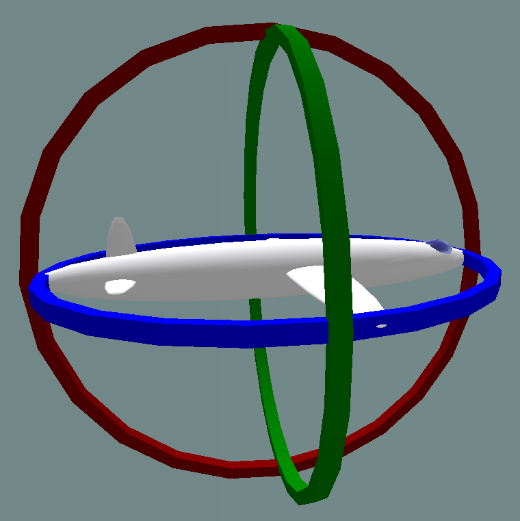
- Normal situation: the three gimbals are independent
正常情况：三个万向节独立
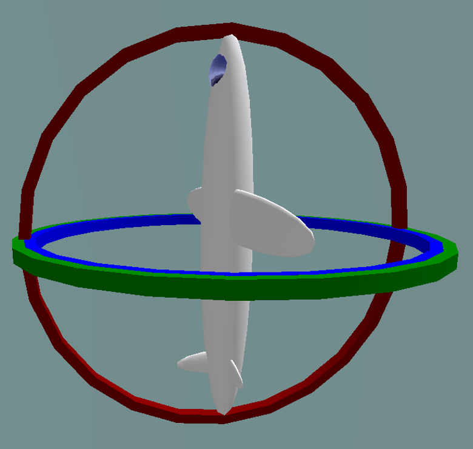
- Gimbal lock: two out of the three gimbals are in the same plane, one degree of freedom is lost
万向节死锁：三个万向节中有两个在同一平面，失去一个自由度
Solutions 解决方案
这个问题可以通过使用第四个万向节来克服，或者完全避免使用万向节，使用四元数方法代替。

- Industrial robot operating in a foundry.
在铸造厂工作的工业机器人。
In robotics, gimbal lock is commonly referred to as "wrist flip", due to the use of a "triple-roll wrist" in robotic arms, where three axes of the wrist, controlling yaw, pitch, and roll, all pass through a common point.
在机器人技术中，万向节死锁通常被称为“手腕翻转”，因为在机械臂中使用了“三滚腕”，其中手腕的三个轴，控制偏航，俯仰和滚动，都通过一个共同点。
An example of a wrist flip, also called a wrist singularity, is when the path through which the robot is traveling causes the first and third axes of the robot's wrist to line up. The second wrist axis then attempts to spin 180° in zero time to maintain the orientation of the end effector. The result of a singularity can be quite dramatic and can have adverse effects on the robot arm, the end effector, and the process.
手腕翻转的一个例子，也称为手腕奇点，是当机器人行进的路径导致机器人手腕的第一轴和第三轴对齐时。 然后，第二腕轴尝试在零时间内旋转 180°，以保持末端执行器的方向。 奇点的结果可能非常显着，并且可能对机器人手臂、末端执行器和过程产生不利影响。
The importance of avoiding singularities in robotics has led the American National Standard for Industrial Robots and Robot Systems – Safety Requirements to define it as "a condition caused by the collinear alignment of two or more robot axes resulting in unpredictable robot motion and velocities".[7]
避免机器人技术中的奇异性的重要性导致美国工业机器人和机器人系统国家标准 - 安全要求将其定义为“由两个或多个机器人轴共线对齐导致的机器人运动和速度不可预测的情况”。 7]
A rotation in 3D space can be represented numerically with matrices in several ways. One of these representations is:
3D 空间中的旋转可以通过多种方式用矩阵数字表示。 这些表示之一是：
$$ {\displaystyle {\begin{aligned}R&={\begin{bmatrix}1&0&0\0&\cos \alpha &-\sin \alpha \0&\sin \alpha &\cos \alpha \end{bmatrix}}{\begin{bmatrix}\cos \beta &0&\sin \beta \0&1&0\-\sin \beta &0&\cos \beta \end{bmatrix}}{\begin{bmatrix}\cos \gamma &-\sin \gamma &0\\sin \gamma &\cos \gamma &0\0&0&1\end{bmatrix}}\end{aligned}}} $$
An example worth examining happens when ${\displaystyle \beta ={\tfrac {\pi }{2}}}$. Knowing that ${\displaystyle \cos {\tfrac {\pi }{2}}=0}$and ${\displaystyle \sin {\tfrac {\pi }{2}}=1}$, the above expression becomes equal to:
一个值得研究的例子发生在 ${\displaystyle \beta ={\tfrac {\pi }{2}}}$。 知道${\displaystyle \cos {\tfrac {\pi }{2}}=0}$和${\displaystyle \sin {\tfrac {\pi }{2}}=1}$，上述表达式变为 等于：
$$ {\displaystyle {\begin{aligned}R&={\begin{bmatrix}1&0&0\0&\cos \alpha &-\sin \alpha \0&\sin \alpha &\cos \alpha \end{bmatrix}}{\begin{bmatrix}0&0&1\0&1&0\-1&0&0\end{bmatrix}}{\begin{bmatrix}\cos \gamma &-\sin \gamma &0\\sin \gamma &\cos \gamma &0\0&0&1\end{bmatrix}}\end{aligned}}} $$
Carrying out matrix multiplication:
执行矩阵乘法：
$$ {\displaystyle {\begin{aligned}R&={\begin{bmatrix}0&0&1\\sin \alpha &\cos \alpha &0\-\cos \alpha &\sin \alpha &0\end{bmatrix}}{\begin{bmatrix}\cos \gamma &-\sin \gamma &0\\sin \gamma &\cos \gamma &0\0&0&1\end{bmatrix}}&={\begin{bmatrix}0&0&1\\sin \alpha \cos \gamma +\cos \alpha \sin \gamma &-\sin \alpha \sin \gamma +\cos \alpha \cos \gamma &0\-\cos \alpha \cos \gamma +\sin \alpha \sin \gamma &\cos \alpha \sin \gamma +\sin \alpha \cos \gamma &0\end{bmatrix}}\end{aligned}}} $$
And finally using the trigonometry formulas:
最后使用三角公式：
$$ {\displaystyle {\begin{aligned}R&={\begin{bmatrix}0&0&1\\sin(\alpha +\gamma )&\cos(\alpha +\gamma )&0\-\cos(\alpha +\gamma )&\sin(\alpha +\gamma )&0\end{bmatrix}}\end{aligned}}} $$
Changing the values of ${\displaystyle \alpha }$ and ${\displaystyle \gamma }$ in the above matrix has the same effects: the rotation angle ${\displaystyle \alpha +\gamma }$ changes, but the rotation axis remains in the ${\displaystyle Z}$ direction: the last column and the first row in the matrix won't change. The only solution for ${\displaystyle \alpha }$ and ${\displaystyle \gamma }$ to recover different roles is to change ${\displaystyle \beta }$ .
改变上述矩阵中${\displaystyle \alpha }$和${\displaystyle \gamma }$的值具有相同的效果：旋转角度${\displaystyle \alpha +\gamma }$改变了，但是旋转轴 保持在 ${\displaystyle Z}$ 方向：矩阵中的最后一列和第一行不会改变。 ${\displaystyle \alpha }$ 和 ${\displaystyle \gamma }$ 恢复不同角色的唯一解决方案是更改 ${\displaystyle \beta }$ 。
It is possible to imagine an airplane rotated by the above-mentioned Euler angles using the X-Y-Z convention. In this case, the first angle - ${\displaystyle \alpha }$ is the pitch. Yaw is then set to ${\displaystyle {\tfrac {\pi }{2}}}$ and the final rotation - by ${\displaystyle \gamma }$ - is again the airplane's pitch. Because of gimbal lock, it has lost one of the degrees of freedom - in this case the ability to roll.
可以想象一架飞机使用 X-Y-Z 约定以上述欧拉角旋转。 在这种情况下，第一个角度 - ${\displaystyle \alpha }$ 是音高。 然后将偏航设置为 ${\displaystyle {\tfrac {\pi }{2}}}$，最后的旋转 - 通过 ${\displaystyle \gamma }$ - 再次是飞机的俯仰角。 由于万向节死锁，它失去了一个自由度——在这种情况下，它失去了滚动的能力。
It is also possible to choose another convention for representing a rotation with a matrix using Euler angles than the X-Y-Z convention above, and also choose other variation intervals for the angles, but in the end there is always at least one value for which a degree of freedom is lost.
除了上面的 X-Y-Z 约定，还可以选择使用欧拉角的矩阵表示旋转的另一种约定，也可以为角度选择其他变化区间，但最终总是至少有一个值的度数失去了自由。
The gimbal lock problem does not make Euler angles "invalid" (they always serve as a well-defined coordinate system), but it makes them unsuited for some practical applications.
万向节死锁问题不会使欧拉角“无效”（它们始终用作定义明确的坐标系），但它使它们不适合某些实际应用。
The cause of gimbal lock is the representation of orientation in calculations as three axial rotations based on Euler angles. A potential solution therefore is to represent the orientation in some other way. This could be as a rotation matrix, a quaternion (see quaternions and spatial rotation), or a similar orientation representation that treats the orientation as a value rather than three separate and related values. Given such a representation, the user stores the orientation as a value. To quantify angular changes produced by a transformation, the orientation change is expressed as a delta angle/axis rotation. The resulting orientation must be re-normalized to prevent the accumulation of floating-point error in successive transformations. For matrices, re-normalizing the result requires converting the matrix into its nearest orthonormal representation. For quaternions, re-normalization requires performing quaternion normalization.
万向节死锁的原因是计算中的方向表示为基于欧拉角的三个轴向旋转。 因此，一个潜在的解决方案是以其他方式表示方向。 这可以是旋转矩阵、四元数（参见四元数和空间旋转）或类似的方向表示，将方向视为一个值，而不是三个单独的相关值。 给定这样的表示，用户将方向存储为一个值。 为了量化变换产生的角度变化，方向变化表示为增量角度/轴旋转。 生成的方向必须重新归一化，以防止在连续转换中累积浮点误差。 对于矩阵，重新归一化结果需要将矩阵转换为其最接近的正交表示。 对于四元数，重新归一化需要执行四元数归一化。
Charts on SO(3)
Flight dynamics
Grid north (equivalent navigational problem on polar expeditions)
Inertial navigation system
Motion planning
Quaternions and spatial rotation
黎曼流形*（Riemannian Manifold）是微分几何中的一个核心概念，指一个配备了黎曼度量（Riemannian Metric）的微分流形。它允许在流形上定义长度、角度、曲率等几何性质，是现代几何学、物理学（如广义相对论）和机器学习的基础工具之一。
核心定义
-
微分流形（Manifold）
一个局部类似于欧几里得空间（如 (\mathbb{R}^n)）的拓扑空间，例如球面、环面或更复杂的曲面。 -
黎曼度量（Riemannian Metric）
在流形的每一点 (p) 的切空间 (T_p M) 上，定义一个正定对称双线性形式 (g_p)，即对任意切向量 (X, Y \in T_p M)，满足：- 对称性：(g_p(X, Y) = g_p(Y, X))
- 正定性：(g_p(X, X) \geq 0)，且等号仅在 (X=0) 时成立。
这个度量允许计算切向量的长度、两向量的夹角以及曲线的弧长。
关键性质
-
曲线长度
流形上一条曲线 (\gamma(t)) 的弧长为： [ L = \int_a^b \sqrt{g_{\gamma(t)}(\dot{\gamma}(t), \dot{\gamma}(t))} , dt ] 其中 (\dot{\gamma}(t)) 是曲线的切向量。 -
曲率
黎曼流形的曲率（如截面曲率、里奇曲率）由度量张量 (g) 的导数决定，描述了流形的“弯曲程度”。 -
测地线
流形上局部最短路径称为测地线（类似欧氏空间中的直线），由度量 (g) 决定的微分方程描述。
经典例子
-
欧氏空间 (\mathbb{R}^n)
配备标准内积 (g_{ij} = \delta_{ij})（即单位矩阵），此时长度、角度与经典几何一致。 -
球面 (S^2)
作为二维黎曼流形，其度量由三维欧氏空间中的诱导度量给出，曲率为正。 -
双曲平面 (\mathbb{H}^2)
负曲率流形的代表，常用于非欧几何和相对论模型。
物理与科学中的应用
-
广义相对论
时空被建模为四维伪黎曼流形（洛伦兹流形），其度量张量满足爱因斯坦场方程。 -
机器学习
- 流形学习（Manifold Learning）：通过黎曼几何降维（如Isomap、拉普拉斯特征映射）。
- 优化算法：在非欧空间（如对称正定矩阵流形）设计梯度下降。
-
计算机视觉
处理3D形状、动作识别时，利用黎曼流形表示姿态或形变。
与伪黎曼流形的区别
- 黎曼流形：度量正定（所有方向长度为正），适用于空间几何。
- 伪黎曼流形：度量非正定（如时空中的洛伦兹度量 ((-,+,+,+))），用于相对论。
数学意义
黎曼流形将微积分推广到弯曲空间，统一了局部线性性质与全局拓扑结构，是研究几何、拓扑与物理的核心框架。例如：
- 高斯-博内定理：连接曲率与欧拉示性数。
- 爱因斯坦方程：物质分布决定时空曲率。
总结：黎曼流形是“弯曲空间”的严格数学描述，通过度量张量赋予其几何结构，为物理学、几何分析和数据科学提供了普适的语言。
P31
Spherical Harmonics
$$ Y_ {lm}(\theta ,\phi )= N_ {lm}P_ {lm}(\cos \theta )e^ {Im \phi } $$

$$ \begin{align*} x& = \sin \theta \cos \phi \\ y & = \sin \theta \sin \phi\\ z & = \cos\theta \end{align*} $$
Complex sphere integration can be approximated by quadratic polynomial：
$$ \int\limits_{\theta =0}^{\pi } \int\limits_{\phi =0}^{2\pi } L(\theta,\phi )Y_{lm}(\theta ,\phi )\sin \theta d\theta d\phi \approx \begin{bmatrix} x \\ y \\ z\\ 1 \end{bmatrix}^TM\begin{bmatrix} x \\ y \\ z \\ 1 \end{bmatrix} $$

利用球谐函数定义了一组基，通过对球谐基的加权平均，可以组合出任意复杂的球面。
P32
Spherical Harmonics 基

Spherical Harmonics, a mathematical system analogous to the Fourier transform but defined across
the surface of a sphere. The SH functions in general are defined on imaginary numbers
绿色表示正值，红色表示负值。
每一个维度的所有基都是正交的。
二阶导永远 0（光滑）。
P33
Spherical Harmonics Encoding